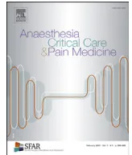

Guidelines
Thomas Geeraertsa,*, Lionel Vellyb, Lamine Abdennourc, Karim Asehnound, Gérard Audiberte, Pierre Bouzatf, Nicolas Bruderb, Romain Carrillong, Vincent Cottenceauh, François Cottoni, Sonia Courtil-Teyssedrej, Claire Dahyot-Fizelierk, Frédéric Daillerg, Jean-Stéphane Davidl, Nicolas Engrandm, Dominique Fletchern, Gilles Franconyf, Laurent Gergeléo, Carole Ichaip, Étienne Javouheyj, Pierre-Etienne Leblancq,r, Thomas Lieutauds,t, Philippe Meyeru, Sébastien Mirekv, Gilles Oriaguetu, François Proustw, Hervé Quintardp, Catherine Ractq,r, Mohamed Srairia, Karim Tazarourtex, Bernard Viguéq,r, Jean-François Payenf, for the French Society of Anaesthesia, Intensive Care Medicine (Société française d'anesthésie et de réanimation [SFAR]) in partnership with Association de neuro-anesthésie-réanimation de langue française (AnarlF) the French Society of Emergency Medicine (Société Française de Médecine d'urgence (SFMU), the Société française de neurochirurgie (SFN), Groupe francophone de réanimation et d'urgences pédiatriques (GFRUP), Association des anesthésistes-réanimateurs pédiatriques d'expression française (Adarpef)
a Pôle anesthésie-réanimation, Inserm, UMR 1214, Toulouse neuroimaging center, ToNIC, université Toulouse 3–Paul Sabatier, CHU de Toulouse, 31059 Toulouse, France
b Service d'anesthésie-réanimation, Aix-Marseille université, CHU Timone, Assistance publique–Hôpitaux de Marseille, 13005 Marseille, France
c Département d'anesthésie-réanimation, groupe hospitalier Pitié-Salpêtrière, AP–HP, 75013 Paris, France
d Service d'anesthésie et de réanimation chirurgicale, Hôtel-Dieu, CHU de Nantes, 44093 Nantes cedex 1, France
e Département d'anesthésie-réanimation, hôpital Central, CHU de Nancy, 54000 Nancy, France
f Pôle anesthésie-réanimation, CHU Grenoble-Alpes, 38043 Grenoble cedex 9, France
g Service d'anesthésie-réanimation, hôpital neurologique Pierre-Wertheimer, groupement hospitalier Est, hospices civils de Lyon, 69677 Bron, France
h Service de réanimation chirurgicale et traumatologique, SAR 1, hôpital Pellegrin, CHU de Bordeaux, Bordeaux, France
i Service d'imagerie, centre hospitalier Lyon Sud, hospices civils de Lyon, 69495 Pierre-Bénite cedex, France
j Service de réanimation pédiatrique, hôpital Femme-Mère-Enfant, hospices civils de Lyon, 69677 Bron, France
k Département d'anesthésie-réanimation, CHU de Poitiers, 86021 Poitiers cedex, France
l Service d'anesthésie réanimation, centre hospitalier Lyon Sud, hospices civils de Lyon, 69495 Pierre-Bénite, France
m Service d'anesthésie-réanimation, Fondation ophthalmologique Adolphe de Rothschild, 75940 Paris cedex 19, France
n Service d'anesthésie réanimation chirurgicale, hôpital Raymond-Poincaré, université de Versailles Saint-Quentin, AP–HP, Garches, France
o Département d'anesthésie-réanimation, CHU de Saint-Étienne, 42055 Saint-Étienne, France
p Service de réanimation médicochirurgicale, UMR 7275, CNRS, Sophia Antipolis, hôpital Pasteur, CHU de Nice, 06000 Nice, France
q Département d'anesthésie-réanimation, hôpital de Bicêtre, hôpitaux universitaires Paris-Sud, AP–HP, Le Kremlin-Bicêtre, France
r Équipe TIGER, CNRS 1072-Inserm 5288, service d'anesthésie, centre hospitalier de Bourg en Bresse, centre de recherche en neurosciences, Lyon, France
s UMRESTTE, UMR-T9405, IFSTTAR, université Claude-Bernard de Lyon, Lyon, France
t Service d'anesthésie-réanimation, hôpital universitaire Necker-Enfants-Malades, université Paris Descartes, AP–HP, Paris, France
u EA 08 Paris-Descartes, service de pharmacologie et évaluation des thérapeutiques chez l'enfant et la femme enceinte, 75743 Paris cedex 15, France
v Service d'anesthésie-réanimation, CHU de Dijon, Dijon, France
w Service de neurochirurgie, hôpital Hautepierre, CHU de Strasbourg, 67098 Strasbourg, France
x SAMU/SMUR, service des urgences, hospices civils de Lyon, hôpital Édouard-Herriot, 69437 Lyon cedex 03, France
* French Society of Anaesthesia and Intensive Care Medicine, in collaboration with AnarlF, SFMU, SFNC, GFRUP, Adarpef, Association de neuro-anesthésie réanimation de langue française, Société française de médecine d'urgence, Société française de neurochirurgie, Groupe francophone de réanimation et d'urgences pédiatriques, Association des anesthésistes-réanimateurs pédiatriques d'expression française.
** Text validated by the SFAR's board (21/09/2017).
* Corresponding author. Pôle Anesthésie Réanimation, CHU de Toulouse, 31059 Toulouse, Cedex 9, France.
E-mail address: geeraerts.t@chu-toulouse.fr (T. Geeraerts).
Article history:
Available online xxx
The latest French Guidelines for the management in the first 24 hours of patients with severe traumatic brain injury (TBI) were published in 1998. Due to recent changes (intracerebral monitoring, cerebral perfusion pressure management, treatment of raised intracranial pressure), an update was required. Our objective has been to specify the significant developments since 1998. These guidelines were conducted by a group of experts for the French Society of Anesthesia and Intensive Care Medicine (Société française d'anesthésie et de réanimation [SFAR]) in partnership with the Association de neuro-anesthésie-réanimation de langue française (ANARLF), The French Society of Emergency Medicine (Société française de médecine d'urgence (SFMU), the Société française de neurochirurgie (SFN), the Groupe francophone de réanimation et d'urgences pédiatriques (GFRUP) and the Association des anesthésistes-réanimateurs pédiatriques d'expression française (ADARPEF). The method used to elaborate these guidelines was the Grade® method. After two Delphi rounds, 32 recommendations were formally developed by the experts focusing on the evaluation the initial severity of traumatic brain injury, the modalities of prehospital management, imaging strategies, indications for neurosurgical interventions, sedation and analgesia, indications and modalities of cerebral monitoring, medical management of raised intracranial pressure, management of multiple trauma with severe traumatic brain injury, detection and prevention of post-traumatic epilepsy, biological homeostasis (osmolarity, glycaemia, adrenal axis) and paediatric specificities.
© 2017 The Authors. Published by Elsevier Masson SAS on behalf of Société française d'anesthésie et de réanimation (Sfar). This is an open access article under the CC BY-NC-ND license (http://creativecommons.org/licenses/by-nc-nd/4.0/).
Thomas Geeraerts, Anaesthesiology and critical care department, university hospital of Toulouse, 31059 Toulouse cedex 9, France.
Jean-François Payen, Anaesthesiology and critical care department, university hospital of Grenoble Alpes, 38043 Grenoble cedex 9, France.
Dominique Fletcher, Anaesthesiology and surgical intensive care Untit, hôpital Raymond-Poincaré, Assistance publique-Hôpitaux de Paris, Paris, France.
Lionel Velly, Anaesthesiology and critical care department, university hospital of La Timone, Assistance publique-Hôpitaux de Marseille, Marseille, France.
Lamine Abdennour (Paris), Karim Asehnoune (Nantes), Gérard Audibert (Nancy), Pierre Bouzat (Grenoble), Nicolas Bruder (Marseille), Romain Carrillon (Lyon), Vincent Cottenceau (Bordeaux), François Cotton (Lyon), Sonia Courtil-Teyssedre (Lyon), Claire Dahyot-Fizelier (Poitiers), Frédéric Dailler (Lyon), Jean-Stéphane David (Lyon), Nicolas Engrand (Paris), Dominique Fletcher (Garches), Gilles Francony (Grenoble), Laurent Gergelé (Saint-Etienne), Thomas Geeraerts (Toulouse), Carole Ichai (Nice), Etienne Javouhey (Lyon), Pierre-Etienne Leblanc (Paris), Thomas Lieutaud (Lyon), Philippe Meyer (Paris), Sébastien Mirek (Dijon), Gilles Oriaguet (Paris), Jean-François Payen (Grenoble), François Proust (Strasbourg), Hervé Quintard (Nice), Catherine Ract (Paris), Mohamed Srairi (Toulouse), Karim Tazarourte (Lyon), Lionel Velly (Marseille), Bernard Vigué (Paris).
R. Carrillon, L. Gergelé, L. Abdennour, T. Geeraerts.
Guidelines committee of the French Society for Anesthesia and Intensive Care Medicine (SFAR): J. Amour, S. Ausset, G. Chanques, V. Compère, P. Cuvillion, F. Espitalier, D. Fletcher, M. Garnier, E. Gayat, J.M. Malinovski, B. Rozec, B. Tavernier, L. Velly.
Administrative board of the French Society for Anesthesia and Intensive Care Medicine (SFAR): F. Bonnet, X. Capdevila, H. Bouaziz, P. Albaladejo, J.-M. Constantin, L. Delaunay, M.-L. Citanova Pansard, B. Al Nasser, C.-M. Arnaud, M. Beaussier, J. Cabaton, M.-
P. Chariot, A. Delbos, C. Ecoffey, J.-P. Estebe, O. Langeron, M. Leone, L. Mercadal, M. Gentili, J. Ripart, J.-C. Sleth, B. Tavernier, E. Viel, P. Zetlaoui.
The latest French guidelines for the management in the first 24 hours of patients with severe traumatic brain injury (TBI) were published in 1998 [1]. Due to recent changes (intracerebral monitoring, cerebral perfusion pressure management, treatment of intracranial hypertension), an update was required. We would like to highlight the major work done by experts in 1998 and advise readers to refer to it. A large part of the 1998 guidelines remains valid and we present updated recommendations in the present material. These guidelines refer to the early management of severe TBI, i.e. the first 24 hours after injury. Later management (> 24 hrs) and mild and moderate TBI patients have not been taken into consideration.
Guidelines for temperature control were not addressed in this document because of the concomitant publication of French guidelines on targeted temperature management in the ICU with a specific focus on brain-injured patients [2].
These guidelines were conducted by a group of experts for the French Society of Anaesthesia and Intensive Care Medicine (Société française d'anesthésie et de réanimation [SFAR] in partnership with the Association de neuro-anesthésie-réanimation de langue française [Anarlf], the French Society of Emergency Medicine (Société Française de médecine d'urgence [SFMU], the Société française de neurochirurgie [SFN], the Groupe francophone de réanimation et d'urgences pédiatriques [GFRUP], and the Association des anesthésistes-réanimateurs pédiatriques d'expression française [Adarpef]). The organising committee defined a list of questions to be addressed and designated experts in charge of each question. The questions were formulated using the PICO (Patient Intervention Comparison Outcome) format.
The method used to elaborate these guidelines was the GRADE® method. Following a quantitative literature analysis, this method was used to separately determine the quality of available evidence, i.e. estimation of the confidence needed to analyse the effect of the quantitative intervention, and the level of recommendation. The quality of evidence was rated as follows:
The level of recommendation was binary (either positive or negative), and strong or weak:
The strength of the recommendations was determined according to key factors and validated by the experts after a vote, using
the Delphi and Grade Grid method that encompasses the following criteria:
The elaboration of a recommendation requires that at least 50% of voting participants have an opinion and that less than 20% of participants vote for the opposite proposition. The elaboration of a strong agreement requires the agreement of at least 70% of voting participants.
The guidelines on the management at the early phase of severe TBI were analysed by 32 experts according to 11 topics:
The PubMed and Cochrane databases were searched for full articles written in English or French, and published after 1998. A specific analysis was performed for TBI in paediatric patients.
The level of evidence of the literature focused on TBI is globally associated with a weak level of methodology. The analysis of the literature led to three situations:
After the implementation of the GRADE® method, 32 recommendations were formally developed by the organising committee: 10 were strong (Grade 1 ±), 18 were weak (Grade 2 ±), and 4 were expert opinions because GRADE® methodology was not applicable.
All recommendations were submitted to a reviewing group for a Delphi method assessment. After 2 rounds of voting and evaluation and after various amendments, a strong agreement was reached for 32 (100%) recommendations.
R1.1 – We recommend assessing the severity of traumatic brain injury using the Glasgow coma scale, specifically the motor response, as well as pupillary size and reactivity.
Grade 1+, Strong agreement
Argument:
The initial clinical evaluation of severe TBI has not significantly changed since the 1998 French Guidelines [1].
Age, initial Glasgow coma scale, and pupillary size and reactivity are key issues of the neurological outcome at 6 months, even in the recent studies [3–10]. The IMPACT [11] and CRASH [12] studies, including respectively 6681 and 8509 patients, have validated these criteria.
The Glasgow coma scale must be described according to each of the 3 components, according to the original description, i.e. Eye-Verbal-Motor response [13,14].
However, the correlation between the Glasgow coma score and outcome has become less evident in recent studies [6]. The extensive use of sedation and tracheal intubation on scene has disabled the assessment of eye and verbal responses. The motor component remains robust in sedated patients and it is well correlated with the severity of head trauma. A simplified assessment of TBI patients based on the motor response has been proposed [11,15–23].
In order to detect secondary neurological aggravation, clinical examination has to be repeated during the initial management of the patient [24–26]. The rhythm of this recurrent examination is left at the discretion of the in-charge physician, but it must be continued after the hospital admission [5,24].
Moderate TBI patients, i.e., with a Glasgow coma score between 9 and 13, have a significant risk of secondary neurological degradation [5]. In this situation, the rhythm of neurological examination can be planned every hour in Australia [27]; every 30 min for the first 2 hours and then every hour during the 4 following hours in the United Kingdom [28]; or every 15 min during the first 2 hours and then every hour for the following 12 hours in Scandinavia [29]. The occurrence of a secondary neurological deficit or a decrease of at least two points in the Glasgow coma score should lead to a second CT scan [27–30].
R1.2 – We recommend investigating and correcting systemic factors of secondary cerebral insults.
Grade 1+, Strong agreement
Argument:
Arterial hypotension at the initial phase of TBI is a key issue associated with a poor prognosis at 6 months [11,31]. The Traumatic Coma Data Bank showed that the occurrence of episodes of arterial hypotension (systolic blood pressure < 90 mmHg) for at least 5 minutes was associated with a significant increase in neurological morbidity and mortality [32]. Prehospital and intrahospital arterial hypotension is associated with an increased mortality [33–35]. The 2014 French Guidelines on haemorrhagic shock recommended maintaining a mean arterial pressure mmHg in severe TBI patients.
Hypoxemia occurs in approximately 20% of patients with traumatic brain injury [35]. It is associated with increased mortality and aggravated neurological outcome. The IMPACT study found that the presence of hypoxia was significantly associated with poor neurological outcome at 6 months [11]. Furthermore, the duration of hypoxemic episodes () is an important predictor of mortality [36].
The association of arterial hypotension and hypoxemia appears to be particularly deleterious with a 75% mortality rate [37].
Protocols on the detection and correction of these secondary insults are associated with an improvement of the outcome of
brain-injured patients [1,38]. A retrospective study comparing before-after implementation of protocols focused on intracranial pressure monitoring and the prevention of secondary insults found a significant reduction in mortality after such implementation [39].
R1.3 – We recommend assessing the initial severity of traumatic brain injury on clinical and radiological criteria (CT scan).
Grade 1+, Strong agreement
Argument:
Brain and cervical CT scans should be performed systematically and without delay in any severe (Glasgow coma scale ), or moderate (Glasgow coma scale 9–13) TBI.
Patients with mild TBI (Glasgow coma scale 14–15) should have a brain CT scan if they meet the followings: signs of fracture of the basal skull (rhinorrhoea, otorrhea, haemotympan, retroauricular haematoma, periorbital haematoma), displaced skull fracture, post-traumatic epilepsy, focal neurological deficit, coagulation disorders, anticoagulant therapy [25,28–30].
R1.4 – We suggest using transcranial Doppler to assess the severity of traumatic brain injury.
Grade 2+, Strong agreement
Argument:
In TBI patients, cerebral perfusion pressure (CPP) may be estimated by the calculation of Pulsatility Index (PI), a parameter derived from the measurement of diastolic, systolic and mean blood flow velocities [40]. Transcranial Doppler (TCD) has gained interest to estimate brain haemodynamics in the intensive care unit. However, there are limited data on the use of TCD in patients with traumatic brain injury upon their arrival at the hospital. These studies found an association between higher mortality rate and a mean blood flow velocity (Vm) below 28 cm/s [41] or a combination of a low Vm and high PI [42]. In 36 children, a diastolic blood flow velocity (Vd) of less than 25 cm/s or a PI greater than 1.3 was associated with poor outcome [43]. After moderate or mild TBI patients (Glasgow coma score 9–14), PI value on admission was higher in patients with a secondary neurological degradation within the first week post-trauma [44]. In a subsequent study, thresholds for predicting secondary neurological degradation in this population were 25 cm/s for Vd and 1.25 for PI [45]. In severe TBI patients (Glasgow score < 9), a strategy based on TCD measurements on admission to the emergency room was described [46]: if the patient had Vd < 20 cm/s and PI > 1.4, therapeutic measures were taken to improve brain perfusion.
Using TCD on arrival at the hospital should be part of the initial assessment of multiple trauma patients, and be included in the Focused assessment with sonography for trauma (FAST).
R1.5 – We do not suggest using biomarkers in clinical routine to assess the initial severity of traumatic brain injury patients.
Grade 2-, Strong agreement
Argument:
In addition to the initial assessment using the Glasgow coma scale (GCS) and brain CT imaging, the use of biomarkers has been proposed to provide more information on the severity of TBI.
An association was found between neurological outcome at 3 and 6 months and the following biomarkers: plasma S100 [47,48], neuron specific enolase (NSE) [49,50], ubiquitin C-terminal hydrolase-L1 (UCH-L1) [51–53], glial fibrillary protein acid (GFAP) [48,49], myelin-basic protein (MBP) [54,55] and tau protein [56]. Similar findings were observed in the cerebrospinal fluid with S100 protein [47], UCH-L1, SBDPs [57,58] and
tau protein [59]. However, uncertainties still remain in the performance of these biomarkers, particularly serum biomarkers, to evaluate the initial severity of TBI patients [60].
R2.1 – We recommend managing severe TBI patients by a pre-hospital medicalised team on scene and transferring them as soon as possible to a specialised centre including neurosurgical facilities.
Grade 1+, Strong agreement
Argument:
In trauma injuries, TBI was shown to mostly benefit from admission to specialised centres in terms of survival rates [61–69]. The management of severe TBI patients in a specialised neuro-intensive care was associated with improved outcome [70,71].
In a retrospective study comparing two periods (before/after the creation of a neuro-intensive care unit), the neurological outcome was significantly improved in the latter period, after adjusting for other factors such as Glasgow coma scale, age, or occurrence of arterial hypotension upon arrival [70]. For illnesses with the same severity, the mortality rate was lower in neurosurgical centres compared to non-specialised centres, even for patients who did not require neurosurgical procedure. [68]. This is due to expertise accumulated from large inflows of these patients and to the availability of neurosurgeons. The non-specialised centres should be able to early detect patients who need a transfer to a specialised centre.
R2.2 – In adults, we suggest maintaining a systolic blood pressure > 110 mmHg prior to measuring cerebral perfusion pressure.
Grade 2+, Strong agreement
Argument:
The neurological outcome is undoubtedly worsened after a single episode of hypotension (systolic blood pressure < 90 mmHg) during the early phase of TBI [72–75]. More recently, mortality rate was found markedly raised where systolic blood pressure dropped below 110 mmHg at admission [63,76,77].
Prevention of any episode of arterial hypotension is critical: no hypotensive hypnotic agent to induce sedation, continuous sedation rather than bolus of sedatives, correction of hypovolaemia if needed, mechanical ventilation adjusted to facilitate central venous return [78–80]. Rapid correction of arterial hypotension should include vasopressor drugs such as phenylephrine and norepinephrine. Decreasing doses of sedatives or increasing fluids may have delayed effects on haemodynamics. Catecholamines can be initially infused through an indwelling catheter in a peripheral vein.
R2.3 – We recommend controlling the ventilation of severe traumatic brain injury patients throughout tracheal intubation, mechanical ventilation, and end Tidal CO2 monitoring even during the pre-hospital period.
Grade 1+, Strong agreement
Argument:
Airway control is a priority and pre-hospital tracheal intubation decreases mortality of trauma patients [81–83]. The arterial partial pressure of CO2 (PaCO2) has a strong impact on cerebral circulation. Hypocapnia induces cerebral vasoconstriction, and is a risk factor for brain ischaemia [82,84]. Monitoring of end-tidal CO2 (EtCO2) in intubated patients is critical to check the correct placement of tracheal tube, to maintain PaCO2 within a
normal range and to detect a possible decrease in cardiac output [85–88]. An EtCO2 between 30–35 mmHg is recommended prior to getting arterial gas samples to adjust mechanical ventilation.
R3.1 – We recommend performing a brain and cervical computed tomography (CT) scan without delay in severe traumatic brain injury patients.
Grade 1+, Strong agreement
Argument:
The exploration of the entire brain with nested, inframillimetric sections reconstructed with a thickness of more than one millimetre is the reference CT method in TBI.
The sections should be visualised with double fenestration, i.e., central nervous system and bones.
Due to its availability, the CT scan is the first choice to make the diagnosis of the primary brain lesions [89]. It must be carried out without delay in case of coma or abnormal neurological examination. The initial CT scan can guide neurosurgical procedures and monitoring techniques [90,91].
R3.2 – We suggest performing an early exploration of the supra-aortic and intracranial arteries using CT-angiography in patients with risk factors.
Grade 2+, Strong agreement
Argument:
The risk factors for traumatic dissection of supra-aortic and intracranial arteries are [92]:
These risk factors should lead to an exploration of the supra-aortic and intracranial vessels by CT-angiography. Even in the absence of these risk factors, indications of this exam can be extended, especially in the most severe patients in whom the neurological examination may be limited [93,94]. In case of a strong suspicion of arterial dissection, a normal CT-angiography should be completed with a MR-angiography or a digital subtraction angiography [95–97].
R4.1 – We suggest performing external ventricular drainage to treat persisting intracranial hypertension despite sedation and correction of secondary brain insults.
Grade 2+, Strong agreement
Argument:
Drainage of cerebrospinal fluid (CSF) from normal or small volume ventricles is a therapeutic option to control intracranial pressure. Although mentioned in studies [98], the efficacy of this procedure lacks strong evidence. Subtraction of a small volume of CSF may reduce markedly the intracranial pressure. External ventricular drain can be inserted using neuronavigation [99].
In addition, after failure of first-line treatment of intracranial hypertension, the removal of brain contusions with mass effect is also an option [100].
The neurosurgical indications at the early phase of severe TBI patient are:
R4.2 – We suggest performing a decompressive craniectomy to control intracranial pressure at the early phase of TBI where refractory intracranial hypertension in a multidisciplinary discussion.
Grade 2+, Strong agreement
Argument:
Four clinical trials including more than 1000 patients have investigated the efficacy of decompressive craniectomy after TBI [101–104]. The place of craniectomy in the therapeutic strategy varied across studies, i.e. used as a rescue strategy in refractory intracranial hypertension, or early, in the first 72 hours, before the initiation of therapeutic hypothermia and barbiturates. The most commonly used technique is a large temporal craniectomy (> 100 cm2) with enlarged dura mater plasty. The bifrontal craniectomy, indicated in patients with diffuse lesions, was used in some studies. Aging was an exclusion criterion with a threshold set at 60 years (1 study), 65 years (2 studies) and 70 years (1 study). The decision must be taken on a case-by-case basis. Good outcome, as defined by the Glasgow Outcome Scale (GOS) score of 4 or 5 at 6 months post-trauma, were 28–32% in the control group versus 40–57% after a unilateral craniectomy () [102,103]. In the DECRA study, a bifrontal craniectomy was associated with poor outcome: the extended GOS (E-GOS) score of 1–4 (poor outcome) measured at 6 months, was 51% in the control group versus 70% in the intervention group () [104]. The RESCUE-ICP study included patients with refractory intracranial hypertension and randomised patients to undergo either decompressive craniectomy (201 patients) or barbiturates coma (188 patients). In the decompressive craniectomy group, the mortality rate was reduced to 26.9% (vs. 48.9% in the medical group), at the expense of more patients with poor neurological outcome (8.5% versus 2.1%). Favourable outcome at 6 months was not different between the two groups: 26.6% in the medical group versus 27.4% in the intervention group [105].
patients with low intracranial compliance [109,110]. No evidence was found that one sedative or opioid agent provided more efficacy than another in TBI patients. Arterial hypotension can be observed with barbiturates [111], bolus of midazolam [112] or bolus of opioids [113]. Attention should be paid to the control of systemic haemodynamics in the choice of drugs and their modalities of administration. Insufficient data exist with the use of halogenated agents and dexmedetomidine in TBI patients.
R6.1 – We suggest monitoring intracranial pressure (ICP) after severe TBI to detect intracranial hypertension in the following cases:
Grade 2+, Strong Agreement
Argument:
Although the benefit of ICP monitoring on patient outcome has not been clearly demonstrated, this technique has become an integral part of the management of severe TBI patients [114]. Retrospective and observational studies have estimated the risk of intracranial hypertension after severe TBI [115–118]. The incidence of high ICP varies between 17 and 88% [119–122]. An ICP of 20–40 mmHg is associated with a higher risk of 3.95 (95% confidence interval [1.7–7.3]) of mortality and poor neurological outcome [123]. Above an ICP of 40 mmHg, mortality risk is 6.9 times higher (95% confidence interval [3.9–12.4]).
The impact of intracranial hypertension on the outcome requires the use of ICP monitoring in patients whose neurological assessment is not feasible.
When the initial CT-scan is abnormal, more than 50% of patients will present intracranial hypertension [115]. Among the usual CT scan criteria of intracranial hypertension, i.e. the disappearance of cerebral ventricles, brain midline shift over 5 mm, intracerebral haematoma volume over 25 mL [124], the compression of basal cisterns appears to be the best sign to reflect intracranial hypertension [119]. The absence of basal cisterns is associated with an ICP higher than 30 mmHg in more than 70% of cases [125]. However, their visibility cannot exclude intracranial hypertension [126]. The presence of traumatic subarachnoid haemorrhage is associated with a risk of intracranial hypertension [126].
In the case of emergency extracranial surgery, apart from life-threatening surgery, several studies found a high incidence of cerebral hypoperfusion due to arterial hypotension associated with high ICP. A decrease in intraoperative cerebral perfusion pressure below 70 mmHg and 50 mmHg was found in 26–74% of patients [127,128] and in 45% of patients [129], respectively. This reduced perfusion pressure aggravates primary and secondary brain lesions and worsens brain oedema [130–132].
R6.2 – We do not suggest monitoring intracranial pressure if the initial CT-scan is normal with no evidence of clinical severity, and/or transcranial Doppler abnormalities.
Grade 2-, Strong Agreement
Argument:
Although a normal CT-scan cannot exclude the risk of subsequent intracranial hypertension in comatose patients,
R5.1 – Apart from the treatment of intracranial hypertension and convulsive status epilepticus, the maintenance and cessation of sedation and analgesia in patients with severe TBI should follow the guidelines for non-brain injured patients.
Experts' opinion
Argument:
The current guidelines on sedation and analgesia in the ICU [106] should be extended to stabilised brain-injured patients. Although scarcely studied, the use of clinical scores and the implementation of protocols to manage sedation and analgesia may provide benefits [107,108]. The daily interruption of sedation may be deleterious to cerebral haemodynamics in
the incidence of raised ICP is particularly small when the initial CT-scan is normal (0–8%) [133–135]. Recent advances in CT scan imaging may explain the good performance of CT to rule out intracranial hypertension [136,137].
ICP monitoring, particularly with the reference method of intraventricular drain, is associated with complications: catheter placement failure (10%) [115,138], infection (10% for intraventricular drains [139] and 2.5% for intraparenchymal fiberoptic devices [140]), and intracerebral haemorrhage (2–4% for intraventricular drains and 0–1% for intraparenchymal fiberoptic devices [115,141]). Moreover, the benefit of ICP monitoring has not been clearly demonstrated. The randomised controlled study BEST-TRIP (347 patients) found no difference in neurological outcome between ICP monitoring and clinical surveillance with repeated CT-scans [142]. Although the external validity of this study is lacking, the results of that study should be considered. In severe TBI patients with strictly normal initial CT-scan, the risk-benefit balance does not support indication for invasive ICP monitoring. If the neurological surveillance is not feasible and/or if the patient has haemodynamic instability, the risk-benefit balance should be considered on a case-by-case basis. If ICP monitoring is indicated, intraparenchymal probes may be preferred over intraventricular drains (risk-benefit balance).
R6.3 – We suggest monitoring ICP after post-traumatic intracranial haematoma evacuation (subdural, epidural or intraparenchymal) in the case of (only 1 criterion is required):
Grade 2+, Strong Agreement
Argument:
No randomised study has evaluated the benefit of postoperative ICP monitoring after evacuation of post-traumatic intracranial haematoma (subdural, epidural or intraparenchymal). However, in that situation, the incidence of postoperative intracerebral haematoma ranges between 50% [143] and 70% [144]. More than 40% of these patients will have uncontrollable intracranial hypertension [144,145], following haemodynamic instability [146] or initial neurological signs of severity such as preoperative Glasgow Coma Scale motor response inferior or equal to 5, anisocoria, or haematoma volume greater than 25 mL [147]. An increase in ICP may be due to secondary bleeding after decompression or reperfusion, to a new extra-axial collection, or to an increased brain oedema. Retrospective studies have found benefits of postoperative ICP monitoring after decompressive craniectomy [148,149].
R6.4 – Multimodal monitoring with transcranial Doppler and/or brain tissue oxygenation pressure measurements may be used to optimise cerebral blood flow and oxygenation in severe TBI patients.
Experts' opinion
Argument:
Transcranial Doppler cannot be considered as a non-invasive ICP monitoring. Nevertheless, a weak relationship
between the pulsatility index and cerebral perfusion pressure was found [150–152]. Voulgaris et al. [153] found that the pulsatility index measurement can detect patients at risk of reduced cerebral perfusion pressure. Transcranial Doppler can also exclude the risk of severe intracranial hypertension with a negative predictive value of 88% for a 1.26 cut-off for pulsatility index [154].
Brain tissue oxygenation pressure (PbtiO2) reflects the oxygen supply and diffusion in the interstitial space of brain tissue. The risk for brain ischaemia has been set for PbtiO2 less than 15 mmHg [155]. This risk of ischaemia is also linked to the duration of hypoxic episodes. The time spent under the ischaemic threshold is a determinant factor for irreversible damage. Van den Brink et al. have proposed different ischaemic thresholds: < 5 mmHg for 30 min, < 10 mmHg for 1 hr and 45 min, < 15 mmHg for 4 hrs [156]. PbtiO2 is correlated with local cerebral blood flow, cerebral perfusion pressure, haemoglobin content and PaO2. A brain tissue response to hyperoxia can be observed. A strong reactivity to oxygen challenge may reflect a loss of cerebral autoregulation [157].
PbtiO2 monitoring is gaining interest to prevent cerebral ischaemia despite normal cerebral perfusion pressure. This monitoring can be used to determine an optimal cerebral perfusion pressure [158]. This strategy might allow optimising treatment during the evolution course of the brain insult. Narotam et al. [159] have retrospectively compared the outcome (survival and neurological outcome at 6 months) after the implementation of a PbtiO2 protocol to maintain PbtiO2 higher than 20 mmHg. An improvement in the outcome was found in this group by comparison with the historical control group managed with intracranial pressure/cerebral perfusion pressure protocol. Similar findings were found by Spiotta et al. [160]. However, the uncontrolled and retrospective nature of these studies cannot allow drawing definitive conclusions on the interest of PbtiO2 in TBI patients.
14. Medical management of raised intracranial pressure
R7.1 – We suggest individualising the objectives of intracranial pressure and cerebral perfusion pressure.
Grade 2+, Strong Agreement
Argument:
The level of ICP associated with poor neurological prognosis is variable in the literature. An ICP higher than 20–25 mmHg is usually admitted as a criterion to initiate therapies. Retrospective and prospective studies have determined ICP values associated with unfavourable outcome [161–168], but effects of ICP monitoring on outcome varied [169–171]. The duration of high ICP is a factor of poor prognosis [172,173], but the direct benefit of ICP monitoring remains controversial [142,174,175]. Moreover, no definite ICP threshold was associated with outcome [176–178]. In this context, recent studies argue in favour of an individualised treatment based on beat-by-beat cerebral autoregulation assessment from the relation between ICP and mean arterial pressure (Pressure Reactivity Index or PRx) [162,163,179–182].
The “optimal” cerebral perfusion pressure (CPP) would correspond to the CPP value for which the autoregulation of cerebral blood flow shows the best vascular response. Recent studies found that the best outcome could be obtained when the actual CPP is close to the optimal calculated CPP [179,180,182,183]. Any deviation from this optimal CPP was associated with poor outcome. These studies support an individualised approach of CPP according to autoregulation status.
R7.2 – In adults, we suggest maintaining cerebral perfusion pressure between 60 and 70 mmHg in the absence of multimodal monitoring.Grade 2+, Strong AgreementArgument:Measurement of ICP allows the determination of cerebral perfusion pressure (CPP) (). In the absence of consensus, it is recommended to place the reference point to measure MAP at the external ear tragus [184,185]. A mmHg is not recommended in routine for all patients. In one randomised controlled trial comparing a strategy maintaining mmHg versus a strategy maintaining an mmHg and a mmHg, the high CPP group had a 5 times higher incidence of respiratory distress syndrome, while no effect was found on the neurological outcome [186]. A mmHg has been shown to be associated with poor outcome [162,164,165,177,178].
A CPP value higher than 90 mmHg was associated with a worsening of the neurological outcome, due to a possible aggravation of vasogenic cerebral oedema [165].
One study compared two strategies conducted in two centres in Sweden and Scotland. In Sweden, the primary objective was keeping the mmHg and the CPP around 60 mmHg as a secondary objective (low CPP), while in Scotland, the primary objective aimed at maintaining the mmHg and mmHg as a secondary objective (high CPP) [181]. Patients with altered cerebral autoregulation had a better outcome with the ICP-based protocol (low CPP). Patients with preserved autoregulation had a better outcome with the CPP-based protocol. In another retrospective study, mmHg was associated with a better prognosis when autoregulation was impaired [187].
R7.3 – We recommend using mannitol 20% or hypertonic saline solution, at a dose of 250 mOsm, in infusion of 15–20 minutes to treat threatened intracranial hypertension or signs of brain herniation after controlling secondary brain insults.Grade 1+, Strong AgreementArgument:Osmotherapy causes a transient increase in the osmolarity of the extracellular space, inducing an osmotic pressure gradient on the blood-brain barrier and a water displacement to the hypertonic environment. Osmotherapy reduces the intracranial pressure (ICP) with a maximum effect observed after 10–15 minutes and for a duration of 2–4 hours, in order to restore cerebral blood flow (CBF). Of the three therapies that decreased ICP, i.e. mannitol, external ventricular drainage, and hyperventilation, mannitol only was associated with improved cerebral oxygenation [188]. Outside the hospital, osmotherapy is the treatment of choice in patients with signs of brain herniation (mydriasis, anisocoria) and/or neurological worsening not attributable to a systemic cause. On the other hand, a prophylactic administration of hypertonic saline solution to patients with no evidence of intracranial hypertension was not superior to crystalloids regarding the outcome [189,190].
At equiosmotic dose (about 250 mOsm), mannitol and hypertonic saline (HS) have comparable efficacy to treat intracranial hypertension [191,192]. Side effects of these osmotic agents should be considered: mannitol induces osmotic diuresis and requires volume compensation while HS exposes to hypernatremia and hyperchloraemia. In both cases, monitoring fluid, sodium and chloride balances is necessary.
R7.4 – We do not suggest using prolonged hypocapnia to treat intracranial hypertension.Grade 2-, Strong AgreementArgument:Hypocapnia was one of the first-line options to treat intracranial hypertension. The only prospective randomised study
that studied the effect of severe and prolonged hypocapnia ( mmHg for 5 days) compared to normocapnia ( mmHg) found worsened neurological outcome in the hypocapnic group [193]. This deleterious effect is due to the exacerbation of secondary ischaemic lesions even for moderate hypocapnia (30 mmHg), decreased cerebral blood flow and increased oxygen extraction, with inconsistent effects on cerebral metabolism [84,194–197]. Thus, prolonged and/or severe hyperventilation to control intracranial hypertension is not recommended in the absence of cerebral oxygen measurement to ensure that cerebral hypoxia is not induced by this procedure.
R7.5 – We do not suggest using 4% albumin solution in severe TBI patients.Grade 2-, Strong AgreementArgument:The SAFE study [198], that recruited nearly 7000 patients, compared the administration of 0.9% saline serum versus 4% albumin in patients admitted to intensive care. At 28 days, no difference in mortality or organ failure was found between the two groups. However, severe TBI patients who received 4% albumin solution had higher mortality rates than those with 0.9% saline serum (24.5% vs. 15.1%, RR: 1.62, CI 95%: 1.12–2.34, ). A subgroup analysis conducted by Myburgh et al. [199] with a 2-year follow-up of 460 patients (including 318 severe TBI) found an increased risk of mortality after albumin administration (41.8% vs. 22.2%, respectively; RR: 1.88, 95% CI 1.31–2.7, ). The hypotonic nature of the 4% albumin infusion may have played a role. If severe TBI is associated with haemorrhagic shock, the use of albumin is not recommended [200]. The European Society of Intensive Care Medicine (ESICM) did not recommend using albumin solution after brain injury [201].
15. Management of multiple trauma with severe traumatic brain injuryR8.1 – In multiple trauma with severe TBI, a whole body CT-scan is considered once haemodynamics and respiratory function are stabilised.Experts' opinionArgument:In trauma patients with haemodynamic instability, the incidence of neurosurgical lesions is low compared to lesions requiring urgent surgical haemostasis (2.5% vs. 21%) [202]. In unstable patients, haemostasis and haemodynamics should be stabilised prior to considering a whole body CT-scan. Although the benefits of a whole body CT-scan on mortality in severe trauma patients did not reach significance (RR: 0.91, 95% CI: 0.79–1.05) [203], the whole-body CT-scan was found more effective to reduce mortality rate in severe trauma patients compared to segmental CT-scan [204,205].
R8.2 – Apart from life-threatening conditions requiring urgent surgery, haemorrhagic procedure is not recommended in the context of intracranial hypertension.Experts' opinionArgument:In severe TBI patients, major surgery with haemorrhage, low arterial blood pressure and blood transfusion can contribute to secondary insults to the brain and aggravate the initial injury and cerebral oedema, increase the risk of developing severe lung injury or even multiple organ failure [130,132,206].
Non-haemorrhagic surgical procedures, e.g. orthopaedic surgery, can be performed early (less than 24 hours) in stabilised brain-injured patients in the absence of intracranial
hypertension. Of 13 studies including patients with traumatic brain injury, none found increased mortality or poor neurological outcome with early surgical procedures [206,130].
R8.3 – We suggest measuring intracranial pressure during extracranial surgical procedure in severe TBI patients.
Grade 2+, Strong Agreement
Argument:
The neurological monitoring of these patients is essential to limit episodes of decreased cerebral perfusion pressure.
Pietropaoli et al. studied the haemodynamic effects of extracranial surgery in the first 72 hours after severe TBI [207]. Thirty-two percent of patients had episodes of intra-operative arterial hypotension (systolic blood pressure < 90 mmHg). These patients had a mortality of 82%, whereas patients without intraoperative arterial hypotension had a mortality of 32%.
R9.1 – We do not suggest using antiepileptic drugs for primary prevention to reduce the incidence of post-traumatic seizures (early and delayed).
Grade 2-, Strong Agreement
Argument:
In the study of Annegers et al. on post-traumatic seizure, the incidence of early clinical seizures (within 7 days after the brain injury) was 2.2%, the incidence of delayed seizures (after 7 days) was 2.1%, but it was 11.9% in the first year for the severe TBI patients [208]. This retrospective study with 4541 minor, moderate and severe TBI did not mention the use of antiepileptic prophylaxis or electroencephalogram recordings. In this study, risk factors for delayed clinical seizures were brain contusion, acute subdural haematoma, skull fracture, initial loss of consciousness or amnesia for more than 24 hours and age over 65 years [208,209]. The occurrence of early seizures did not expose to late seizures in the multivariate analysis. More recently, craniectomy has been identified as a possible risk factor for early post-traumatic seizures [210,211].
The study by Temkin et al. [212] and ancillary studies [213,214] have been integrated in the bibliographic analysis, given their importance.
Eleven clinical trials studied primary prevention of post-traumatic seizures: 2 compared phenytoin versus placebo or no treatment (1101 patients) [215,216], 7 phenytoin versus levetiracetam (1392 patients) [217–223], and 2 valproate versus phenytoin or no treatment (291 patients) [224,225]. Three studies were prospective and 8 retrospective. Three studies included electroencephalogram recordings [217,218,220]. Two meta-analyses have been added [226,227]. Apart from the study by Radic et al. [222], including acute and subacute subdural haematomas, none of these studies specifically assessed aforementioned risk factors for post-traumatic seizure.
All studies had a low level of evidence. Apart from the Cochrane 2015 meta-analysis, which was in favour of phenytoin prevention to early post-traumatic seizures including many studies published before 1998 [227], no significant effect of antiepileptic drugs (AEDs) was found to prevent the occurrence of early or delayed post-traumatic seizures. Moreover, increased side effects of phenytoin were shown [218,219,222,223,227] or even a worsening of the neurological outcome with AEDs [214,216,218].
Overall, prevention of post-traumatic seizures with AEDs cannot be recommended. It can be considered in case of risk factors, e.g. chronic subdural haematoma, or past history of epilepsy. In this case, levetiracetam should be preferred to phenytoin, because of a higher degree of tolerance.
There is no specificity in the treatment of seizures or epilepticus status after severe TBI.
R10.1 – In adults, we do not suggest using prolonged hypernatremia to control intracranial pressure in severe TBI patients.
Grade 2-, Strong Agreement
Argument:
Hypertonic Saline (HS)-induced hypernatremia is derived from the effects of bolus of HS to decrease ICP. A continuous infusion of HS to induce serum hyperosmolarity is postulated as effective to decrease cerebral oedema and ICP, and possibly to improve the outcome. However, there is no trial to validate this hypothesis. In paediatrics, the HS group required fewer interventions to maintain ICP < 15 mmHg than a control group receiving Ringer lactate [228]. However, serum sodium concentrations and osmolarity in the HS group were not reported. There are arguments not in favour of the use of controlled hypernatremia after TBI:
R10.2 – We do not recommend using high-dose glucocorticoids after severe TBI.
Grade 1-, Strong Agreement
Argument:
The CRASH study, with more than 10,000 TBI patients, found a higher mortality rate in the high-dose glucocorticoid group vs. placebo [232].
R10.3 – We recommend the maintenance of serum glucose concentration between 8 mmol/L (1.4 g/L) and 10–11 mmol/L (1.8–2 g/L) in severe TBI patients (adults and children).
Grade 1+, Strong agreement
Argument:
Hyperglycaemia is not uncommon after a severe TBI. This stress-related hyperglycaemia is induced by counter-regulation hormones and/or insulin resistance [233]. Observational studies have clearly shown that hyperglycaemia after a TBI is associated with an increased risk of mortality and poor neuro-
logical outcome [234–241]. Hyperglycaemia with serum glucose > 11 mmol/L (2 g/L) has been identified as an independent risk factor of mortality, infection and prolonged duration in the ICU, after adjustment for age and severity score [234,236]. Hyperglycaemia is considered as a secondary insult to the injured brain tissue.
In general ICU, the initial positive results of strict glycaemic control [242] were not further confirmed [243]. The increased risk of hypoglycaemia associated with intensive insulin therapy cannot be neglected. Using cerebral microdialysis, insulin therapy with a glycaemic control < 6 mmol/L (1.1 g/L) was associated with a decrease in interstitial brain glucose concentration [244–248]. Concomitant elevations of interstitial brain concentrations of lactate, glutamate, and lactate/pyruvate ratio suggested a cerebral energy crisis that may aggravate the initial injury. A randomised, crossover study with 13 TBI patients showed that a strict control of serum glucose (4.4–6.1 mmol/L or 0.8–1.1 g/L) resulted in increased cerebral metabolism and elevation of markers of energy crisis compared to a liberal strategy (6.6–8.3 mmol/L or 1.2–1.5 g/L) [249].
Seven randomised controlled trials have assessed the effects of glycaemic control in TBI patients [242,250–255]. All found that a strict control of serum glucose did not improve the neurological outcome or mortality, while the risk of hypoglycaemia is increased. In 88 severe TBI, a higher incidence of hypoglycaemia was observed in the group with a strict control of serum glucose (4.4–6.1 mmol/L or 0.8–1.1 g/L) [253]. Although no difference in mortality at day 28 or neurological outcome at 6 months was found between 2 targeted concentrations of serum glucose, i.e. 5.9 mmol/L (1.1 g/L) vs 6.5 mmol/L (1.2 g/L), episodes of severe hypoglycaemia were more frequent in the strict control group [255]. Similar conclusions were observed in a post-hoc analysis of TBI patients from the NICE-SUGAR study, [254]. A meta-analysis published in 2012 with 1248 TBI patients [256] found no benefit of a strict glucose control on mortality (RR: 0.99, 95% CI [0.79–1.22]) and a greater risk of hypoglycaemia (RR: 3.1, 95% CI [1.54–6.23], ).
Overall, a targeted serum glucose concentration between 8 mmol/L (1.4 g/L) and 10 mmol/L (1.8 g/L) is recommended for TBI patients. That implies regularly measuring blood glucose concentrations from venous or arterial blood samples.
R11.2 – We suggest setting the minimum cerebral perfusion pressure value according to the age: 40 mmHg for children of 0 to 5 years old, 50 mmHg for 5 to 11 years old and between 50 and 60 mmHg for children older than 11 years old.
Grade 2+, Strong agreement
Argument:
Children with cerebral perfusion pressure (CPP) below 40 mmHg were at higher risk of poor prognosis, including death or severe disability, considering the time spent below this CPP threshold [163,273,287,288]. Although no study had explored the impact of a guided-strategy maintaining CPP > 40 mmHg, an association was found between favourable outcome and CPP thresholds according to the patient age [266,274,276]. Children of 0–5 years and of 6–11 years with CPP < 30 mmHg and < 35 mmHg, respectively, were 8 times more likely to have a poor outcome than those with CPP > 40 mmHg and > 50 mmHg, respectively [276]. Children of 12–17 years with CPP < 50 mmHg had a 2.35-times higher risk of poor outcome than those with CPP > 60 mmHg [276].
The minimal CPP threshold associated with a reduced risk of death was 55 mmHg and 60 mmHg for children of 8 and 7 years, respectively [264,274]. For 10 years old children, the optimal CPP was 58 mmHg [266]. It should be noted that a minimal CPP value does not mean an optimal CPP, which should be explored for each patient.
The relationship between ICP measurements and outcome in children was explored with therapies initiated if ICP > 20 mmHg. These studies consistently found a strong correlation between ICP 20 mmHg and favourable outcome based on Glasgow Outcome Scale measurements (no, minor or moderate disability) [261–263,268–270,272,289]. A strong association was observed between ICP > 40 mmHg (or sometimes 35 mmHg) and unfavourable outcome (death, vegetative state, severe disability) [163,261,262,266,268,272,273,290]. Accordingly, the 2012 American Guidelines [291] confirmed that treatment of high ICP in children should be considered if ICP exceeded 20 mmHg. However, some data suggest that this ICP threshold should be lower in young children. Physiologically, ICP and CPP are reduced in proportion to the children age while comparable values to adults are observed after 6–8 years of age [292]. This supports strategies considering age-related ICP values [163,266,273,290]. If the association between ICP values and outcome is dependent on the age, ICP should be maintained below 20 mmHg in the younger group [271]. However, further studies are needed to confirm these data.
R11.1 – We suggest measuring ICP after paediatric severe TBI, including inflicted TBI in infants.
Grade 2+, Strong agreement
Argument:
Recent studies with severe brain-injured children indicated that ICP monitoring might have a positive impact on neurological outcome [257–260] although this effect cannot be separated from the global management of patient. In addition, studies [163,261–276] found that the level of cerebral perfusion pressure was more correlated with the outcome than the isolated value of ICP.
ICP monitoring is less performed in children < 2 years old [258,277,278]. The inflicted trauma represents a prominent cause of TBI in this subgroup [277,278]. This population is however at risk for high ICP and poor outcome [258,279–282]. In TBI children < 2 years old, the incidence of raised ICP was found high and a strong association existed between cerebral perfusion pressure and neurological outcome [283,284]. The ICP-related complication rates in children and infants did not differ from adults [285,286].
R11.3 – We recommend managing severe TBI children in a paediatric trauma centre or in an adult trauma centre with paediatric expertise.
Grade 1+, Strong argument
Argument:
The management of severe trauma children, especially severe TBI, in a paediatric trauma centre or by default in an adult trauma centre with paediatric expertise, was associated with a reduced morbidity and mortality [293–305].
N. Engrand declares he has a conflict of interest with Sophysa. S. Mirek declares conflicts of interest with Integra Neurosciences, Depuy France Codman Neuro and Sophysa.
The other authors declare that they have no competing interest.
[2] Cariou A, Payen JF, Asehnoune K, Audibert G, Botte A, Brissaud O, et al. Targeted temperature management in the ICU: guidelines from a French expert panel. Anaesth Crit Care Pain Med 2017.
[3] Ono J, Yamaura A, Kubota M, Okimura Y, Isobe K. Outcome prediction in severe head injury: analyses of clinical prognostic factors. J Clin Neurosci 2001;8(2):120–3.
[4] Mosenthal AC, Lavery RF, Addis M, Kaul S, Ross S, Marburger R, et al. Isolated traumatic brain injury: age is an independent predictor of mortality and early outcome. J Trauma 2002;52(5):907–11.
[5] Ratanalert S, Chompikul J, Hirunpat S. Talked and deteriorated head injury patients: how many poor outcomes can be avoided? J Clin Neurosci 2002;9(6):640–3.
[6] Balestreri M, Czosnyka M, Chatfield DA, Steiner LA, Schmidt EA, Smielewski P, et al. Predictive value of Glasgow coma scale after brain trauma: change in trend over the past 10 years. J Neurol Neurosurg Psychiatry 2004;75(1):161–2.
[7] Marmarou A, Lu J, Butcher I, McHugh GS, Murray GD, Steyerberg EW, et al. Prognostic value of the Glasgow coma scale and pupil reactivity in traumatic brain injury assessed pre-hospital and on enrollment: an Impact analysis. J Neurotrauma 2007;24(2):270–80.
[8] Steyerberg EW, Mushkudiani N, Perel P, Butcher I, Lu J, McHugh GS, et al. Predicting outcome after traumatic brain injury: development and international validation of prognostic scores based on admission characteristics. Plos Med 2008;5(8):e165.
[9] Timmons SD, Bee T, Webb S, Diaz-Arrastia RR, Hesdorffer D. Using the abbreviated injury severity and Glasgow coma scale to predict 2-week mortality after traumatic brain injury. J Trauma 2011;71(5):1172–8.
[10] Panczykowski DM, Puccio AM, Scruggs BJ, Bauer JS, Hricik AJ, Beers SR, et al. Prospective independent validation of Impact modeling as a prognostic tool in severe traumatic brain injury. J Neurotrauma 2012;29(1):47–52.
[11] Murray GD, Butcher I, McHugh GS, Lu J, Mushkudiani NA, Maas AI, et al. Multivariable prognostic analysis in traumatic brain injury: results from the Impact study. J Neurotrauma 2007;24(2):329–37.
[12] MRC Crash Trial collaborators, Perel P, Arango M, Clayton T, Edwards P, Komolafe E, et al. Predicting outcome after traumatic brain injury: practical prognostic models based on large cohort of international patients. BMJ 2008;336(7641):425–9.
[13] Teasdale G, Jennett B. Assessment and prognosis of coma after head injury. Acta Neurochir (Wien) 1976;34(1–4):45–55.
[14] Teasdale G, Jennett B, Murray L, Murray G. Glasgow coma scale: to sum or not to sum. Lancet 1983;2(8351):678.
[15] Healey C, Osler TM, Rogers FB, Healey MA, Glance LG, Kilgo PD, et al. Improving the Glasgow coma scale score: motor score alone is a better predictor. J Trauma 2003;54(4):671–8.
[16] Al-Salamah MA, McDowell I, Stiell IG, Wells GA, Perry J, Al-Sultan M, et al. Initial emergency department trauma scores from the OPALS study: the case for the motor score in blunt trauma. Acad Emerg Med 2004;11(8):834–42.
[17] Gill M, Windemuth R, Steele R, Green SM. A comparison of the Glasgow coma scale score to simplified alternative scores for the prediction of traumatic brain injury outcomes. Ann Emerg Med 2005;45(1):37–42.
[18] Hukkelhoven CW, Steyerberg EW, Habbema JD, Farace E, Marmarou A, Murray GD, et al. Predicting outcome after traumatic brain injury: development and validation of a prognostic score based on admission characteristics. J Neurotrauma 2005;22(10):1025–39.
[19] Gill M, Steele R, Windemuth R, Green SM. A comparison of five simplified scales to the out-of-hospital Glasgow coma scale for the prediction of traumatic brain injury outcomes. Acad Emerg Med 2006;13(9):968–73.
[20] Haukoos JS, Gill MR, Rabon RE, Gravitz CS, Green SM. Validation of the Simplified motor score for the prediction of brain injury outcomes after trauma. Ann Emerg Med 2007;50(1):18–24.
[21] Thompson DO, Hurtado TR, Liao MM, Byyny RL, Gravitz C, Haukoos JS. Validation of the simplified motor score in the out-of-hospital setting for the prediction of outcomes after traumatic brain injury. Ann Emerg Med 2011;58(5):417–25.
[22] Caterino JM, Raubenolt A. The prehospital simplified motor score is as accurate as the prehospital Glasgow coma scale: analysis of a statewide trauma registry. Emerg Med J 2012;29(6):492–6.
[23] Singh B, Murad MH, Prokop LJ, Erwin PJ, Wang Z, Mommer SK, et al. Meta-analysis of Glasgow coma scale and simplified motor score in predicting traumatic brain injury outcomes. Brain Inj 2013;27(3):293–300.
[24] Ananda A, Morris GF, Juul N, Marshall SB, Marshall LF, Executive committee of the international selfotel trial. The frequency, antecedent events, and causal relationships of neurologic worsening following severe head injury. Acta Neurochir Suppl 1999;73:99–102.
[25] Servadei F, Teasdale G, Merry G. Neurotraumatology committee of the world federation of neurosurgical S. Defining acute mild head injury in adults: a proposal based on prognostic factors, diagnosis, and management. J Neurotrauma 2001;18(7):657–64.
[26] Compagnone C, d'Avella D, Servadei F, Angileri FF, Brambilla G, Conti C, et al. Patients with moderate head injury: a prospective multicenter study of 315 patients. Neurosurgery 2009;64(4):690–6.
[27] Motor Accident Authorities New South Wales. Guidelines for mild traumatic brain injury following closed head injury. 2008. http://www.maanswgovau/default.aspx?MenuID=148.
[28] Guidelines NICE. Head injury: assessment and early management; 2014 [http://niceorguk/guidance/cg176].
[29] Ingebrigtsen T, Romner B, Kock-Jensen C. The Scandinavian neurotrauma committee. Scandinavian guidelines for initial management of minimal, mild, and moderate head injuries. J Trauma 2000;48(4):760–6.
[30] Unden J, Ingebrigtsen T, Romner B, Scandinavian Neurotrauma C. Scandinavian guidelines for initial management of minimal, mild and moderate head injuries in adults: an evidence and consensus-based update. BMC Med 2013;11:50.
[31] Utomo WK, Gabbe BJ, Simpson PM, Cameron PA. Predictors of in-hospital mortality and 6-month functional outcomes in older adults after moderate to severe traumatic brain injury. Injury 2009;40(9):973–7.
[32] Chesnut RM, Marshall SB, Piek J, Blunt BA, Klauber MR, Marshall LF. Early and late systemic hypotension as a frequent and fundamental source of cerebral ischemia following severe brain injury in the Traumatic Coma Data-Bank. Acta Neurochir 1993;121–5.
[33] Manley G, Knudson MM, Morabito D, Damron S, Erickson V, Pitts L. Hypotension, hypoxia, and head injury – Frequency, duration, and consequences. Arch Surg 2001;136(10):1118–23.
[34] Miller JD, Sweet RC, Narayan R, Becker DP. Early insults to the injured brain. JAMA 1978;240(5):439–42.
[35] Stocchetti N, Furlan A, Volta F. Hypoxemia and arterial hypotension at the accident scene in head injury. J Trauma 1996;40(5):764–7.
[36] Jones PA, Andrews PJ, Midgley S, Anderson SI, Piper IR, Tocher JL, et al. Measuring the burden of secondary insults in head-injured patients during intensive care. J Neurosurg Anesthesiol 1994;6(1):4–14.
[37] Chi JH, Knudson MM, Vassar MJ, McCarthy MC, Shapiro MB, Mallet S, et al. Prehospital hypoxia affects outcome in patients with traumatic brain injury: a prospective multicenter study. J Trauma 2006;61(5):1134–41.
[38] Bratton SL, Chestnut RM, Ghajar J, McConnell Hammond FF, Harris OA, Hartl R, et al. Guidelines for the management of severe traumatic brain injury. I. Blood pressure and oxygenation. J Neurotrauma 2007;24(Suppl. 1):S7–13.
[39] Saul TG, Ducker TB. Effect of intracranial pressure monitoring and aggressive treatment on mortality in severe head injury. J Neurosurg 1982;56(4):498–503.
[40] Czosnyka M, Richards HK, Whitehouse HE, Pickard JD. Relationship between transcranial Doppler-determined pulsatility index and cerebrovascular resistance: an experimental study. J Neurosurg 1996;84(1):79–84.
[41] Chan KH, Miller JD, Dearden NM. Intracranial blood flow velocity after head injury: relationship to severity of injury, time, neurological status and outcome. J Neurol Neurosurg Psychiatry 1992;55(9):787–91.
[42] McQuire JC, Sutcliffe JC, Coats TJ. Early changes in middle cerebral artery blood flow velocity after head injury. J Neurosurg 1998;89(4):526–32.
[43] Trabold F, Meyer PG, Blano S, Carli PA, Oriaguet GA. The prognostic value of transcranial Doppler studies in children with moderate and severe head injury. Intensive Care Med 2004;30(1):108–12.
[44] Jaffres P, Brun J, Decletry P, Bosson JL, Fauvage B, Schleiermacher A, et al. Transcranial Doppler to detect on admission patients at risk for neurological deterioration following mild and moderate brain trauma. Intensive Care Med 2005;31(6):785–90.
[45] Bouzat P, Francony G, Decletry P, Genty C, Kaddour A, Bessou P, et al. Transcranial Doppler to screen on admission patients with mild to moderate traumatic brain injury. Neurosurgery 2011;68(6):1603–9.
[46] Ract C, Le Moigno S, Bruder N, Vigue B. Transcranial Doppler ultrasound goal-directed therapy for the early management of severe traumatic brain injury. Intensive Care Med 2007;33(4):645–51.
[47] Goyal A, Carter M, Niyonkuru C, Fabio A, Amin K, Berger RP, et al. S100b as a prognostic biomarker in outcome prediction for patients with severe TBI. J Neurotrauma 2012.
[48] Pelinka LE, Kroepfl A, Leixnering M, Buchinger W, Raabe A, Redl H. GFAP versus S100b in serum after traumatic brain injury: relationship to brain damage and outcome. J Neurotrauma 2004;21(11):1553–61.
[49] Vos PE, Lamers KJ, Hendriks JC, van Haaren M, Beems T, Zimmerman C, et al. Glial and neuronal proteins in serum predict outcome after severe traumatic brain injury. Neurology 2004;62(8):1303–10.
[50] Guzel A, Er U, Tatli M, Alucu U, Ozkan U, Duzenli Y, et al. Serum neuron-specific enolase as a predictor of short-term outcome and its correlation with Glasgow coma scale in traumatic brain injury. Neurosurg Rev 2008;31(4):439–44 [discussion 44–5].
[51] Papa L, Akinyi L, Liu MC, Pineda JA, Tepas 3rd JJ, Oli MW, et al. Ubiquitin C-terminal hydrolase is a novel biomarker in humans for severe traumatic brain injury. Crit Care Med 2010;38(1):138–44.
[52] Brophy GM, Mondello S, Papa L, Robicsek SA, Gabrielli A, Tepas J, et al. Biokinetic analysis of ubiquitin C-terminal hydrolase-L1 (UCH-L1) in severe traumatic brain injury patient biofluids. J Neurotrauma 2011;28(6):861–70.
[53] Mondello S, Akinyi L, Buki A, Robicsek S, Gabrielli A, Tepas J, et al. Clinical utility of serum levels of ubiquitin C-terminal hydrolase as a biomarker for severe traumatic brain injury. Neurosurg 2011.
[54] Thomas DG, Palfreyman JW, Ratcliffe JG. Serum-myelin-basic-protein assay in diagnosis and prognosis of patients with head injury. Lancet 1978;1(8056):113–5.
[55] Yamazaki Y, Yada K, Morii S, Kitahara T, Ohwada T. Diagnostic significance of serum neuron-specific enolase and myelin basic protein assay in patients with acute head injury. Surg Neurol 1995;43(3):267–70.
[56] Liliang PC, Liang CL, Weng HC, Lu K, Wang KW, Chen HJ, et al. Tau proteins in serum predict outcome after severe traumatic brain injury. J Surg Res 2010;160(2):302–7.
[57] Pineda JA, Lewis SB, Valadka AB, Papa L, Hannay HJ, Heaton SC, et al. Clinical significance of alpha II-spectrin breakdown products in cerebrospinal fluid after severe traumatic brain injury. J Neurotrauma 2007;24(2):354–66.
[58] Mondello S, Robicsek SA, Gabrielli A, Brophy GM, Papa L, Tepas J, et al. alphaII-spectrin breakdown products (SBDPs): diagnosis and outcome in severe traumatic brain injury patients. J Neurotrauma 2010;27(7):1203–13.
[59] Ost M, Nylen K, Csajbok L, Ohrfelt AO, Tullberg M, Wikkelso C, et al. Initial CSF total tau correlates with 1-year outcome in patients with traumatic brain injury. Neurology 2006;67(9):1600–4.
[60] Mrozek S, Dumurgier J, Citerio G, Mebazaa A, Geeraerts T. Biomarkers and acute brain injuries: interest and limits. Crit Care 2014;18(2):220.
[61] MacKenzie EJ, Rivara FP, Jurkovich GJ, Nathens AB, Frey KP, Egleston BL, et al. A national evaluation of the effect of trauma-center care on mortality. N Engl J Med 2006;354(4):366–78.
[62] Newgard CD, Schmicker RH, Hedges JR, Trickett JP, Davis DP, Bulger EM, et al. Emergency medical services intervals and survival in trauma: assessment of the “golden hour” in a North American prospective cohort. Ann Emerg Med 2010;55(3):235–46 e4.
[63] Berry C, Ley EJ, Bukur M, Malinoski D, Margulies DR, Mirocha J, et al. Redefining hypotension in traumatic brain injury. Injury 2012;43(11):1833–7.
[64] Bulger EM, Nathens AB, Rivara FP, Moore M, MacKenzie EJ, Jurkovich GJ, et al. Management of severe head injury: institutional variations in care and effect on outcome. Crit Care Med 2002;30(8):1870–6.
[65] Fuller G, Pallot D, Coats T, Lecky F. The effectiveness of specialist neuroscience care in severe traumatic brain injury: a systematic review. Br J Neurosurg 2014;28(4):452–60.
[66] Bekelis K, Missios S, Mackenzie TA. Prehospital helicopter transport and survival of patients with traumatic brain injury. Ann Surg 2015;261(3):579–85.
[67] Jourdan C, Bosserelle V, Azerad S, Ghout I, Bayen E, Aegerter P, et al. Predictive factors for 1-year outcome of a cohort of patients with severe traumatic brain injury (TBI): results from the Paris-TBI study. Brain Inj 2013;27(9):1000–7.
[68] Patel HC, Bouamra O, Woodford M, King AT, Yates DW, Lecky FE, et al. Trends in head injury outcome from 1989 to 2003 and the effect of neurosurgical care: an observational study. Lancet 2005;366(9496):1538–44.
[69] Hartl R, Gerber LM, Iacono L, Ni Q, Lyons K, Ghajar J. Direct transport within an organized state trauma system reduces mortality in patients with severe traumatic brain injury. J Trauma 2006;60(6):1250–6.
[70] Patel HC, Menon DK, Tebbs S, Hawker R, Hutchinson PJ, Kirkpatrick PJ. Specialist neurocritical care and outcome from head injury. Intensive Care Med 2002;28(5):547–53.
[71] Mirski MA, Chang CW, Cowan R. Impact of a neuroscience intensive care unit on neurosurgical patient outcomes and cost of care: evidence-based support for an intensivist-directed specialty ICU model of care. J Neurosurg Anesthesiol 2001;13(2):83–92.
[72] Chesnut RM, Marshall LF, Klauber MR, Blunt BA, Baldwin N, Eisenberg HM, et al. The role of secondary brain injury in determining outcome from severe head injury. J Trauma 1993;34(2):216–22.
[73] Chesnut RM, Marshall SB, Piek J, Blunt BA, Klauber MR, Marshall LF. Early and late systemic hypotension as a frequent and fundamental source of cerebral ischemia following severe brain injury in the Traumatic coma data bank. Acta Neurochir Suppl 1993;59:121–5.
[74] Hasler RM, Nuesch E, Juni P, Bouamra O, Exadaktylos AK, Lecky F. Systolic blood pressure below 110 mmHg is associated with increased mortality in penetrating major trauma patients: multicentre cohort study. Resuscitation 2012;83(4):476–81.
[75] Fuller G, Hasler RM, Mealing N, Lawrence T, Woodford M, Juni P, et al. The association between admission systolic blood pressure and mortality in significant traumatic brain injury: a multi-centre cohort study. Injury 2014;45(3):612–7.
[76] Butcher I, Maas AI, Lu J, Marmarou A, Murray GD, Mushkudiani NA, et al. Prognostic value of admission blood pressure in traumatic brain injury: results from the Impact study. J Neurotrauma 2007;24(2):294–302.
[77] Brenner M, Stein DM, Hu PF, Aarabi B, Sheth K, Scalea TM. Traditional systolic blood pressure targets underestimate hypotension-induced secondary brain injury. J Trauma Acute Care Surg 2012;72(5):1135–9.
[78] Aufderheide TP, Sigurdsson G, Pirrallo RG, Yannopoulos D, McKnight S, von Briesen C, et al. Hyperventilation-induced hypotension during cardiopulmonary resuscitation. Circulation 2004;109(16):1960–5.
[79] Pepe PE, Roppolo LP, Fowler RL. Prehospital endotracheal intubation: elemental or detrimental? Crit Care 2015;19:121.
[80] Pepe PE, Lurie KG, Wigginton JG, Raeder C, Idris AH. Detrimental hemodynamic effects of assisted ventilation in hemorrhagic states. Crit Care Med 2004;32(9 Suppl.):S414–20.
[81] Bernard SA, Nguyen V, Cameron P, Masci K, Fitzgerald M, Cooper DJ, et al. Prehospital rapid sequence intubation improves functional outcome for patients with severe traumatic brain injury: a randomized controlled trial. Ann Surg 2010;252(6):959–65.
[82] Davis DP, Hoyt DB, Ochs M, Fortlage D, Holbrook T, Marshall LK, et al. The effect of paramedic rapid sequence intubation on outcome in patients with severe traumatic brain injury. J Trauma 2003;54(3):444–53.
[83] Davis DP, Peay J, Serrano JA, Buono C, Vilke GM, Sise MJ, et al. The impact of aeromedical response to patients with moderate to severe traumatic brain injury. Ann Emerg Med 2005;46(2):115–22.
[84] Coles JP, Fryer TD, Coleman MR, Smielewski P, Gupta AK, Minas PS, et al. Hyperventilation following head injury: effect on ischemic burden and cerebral oxidative metabolism. Crit Care Med 2007;35(2):568–78.
[85] Caulfield EV, Dutton RP, Floccare DJ, Stansbury LG, Scalea TM. Prehospital hypocapnia and poor outcome after severe traumatic brain injury. J Trauma 2009;66(6):1577–82 [discussion 83].
[86] Dumont TM, Visioni AJ, Rughani AJ, Tranmer BI, Crookes B. Inappropriate prehospital ventilation in severe traumatic brain injury increases in-hospital mortality. J Neurotrauma 2010;27(7):1233–41.
[87] Maguire M, Slabbert N. Prehospital hypocapnia and poor outcome after severe traumatic brain injury. J Trauma 2010;68(1):250.
[88] Davis DP, Koprowicz KM, Newgard CD, Daya M, Bulger EM, Stiell I, et al. The relationship between out-of-hospital airway management and outcome among trauma patients with Glasgow Coma Scale Scores of 8 or less. Prehosp Emerg Care 2011;15(2):184–92.
[89] Bodanapally UK, Sours C, Zhuo J, Shanmuganathan K. Imaging of traumatic brain injury. Radiol Clin North Am 2015;53(4):695–715 [viii].
[90] Bratton SL, Chestnut RM, Ghajar J, McConnell Hammond FF, Harris OA, Hartl R, et al. Guidelines for the management of severe traumatic brain injury. VI. Indications for intracranial pressure monitoring. J Neurotrauma 2007;24(Suppl. 1):S37–44.
[91] Kim JJ, Gean AD. Imaging for the diagnosis and management of traumatic brain injury. Neurotherapeutics 2011;8(1):39–53.
[92] Miller PR, Fabian TC, Croce MA, Cagiannos C, Williams JS, Vang M, et al. Prospective screening for blunt cerebrovascular injuries: analysis of diagnostic modalities and outcomes. Ann Surg 2002;236(3):386–93 [discussion 93–5].
[93] Shea K, Stahmer S. Carotid and vertebral arterial dissections in the emergency department. Emerg Med Pract 2012;14(4):1–23 [quiz –4].
[94] Parks NA, Croce MA. Use of computed tomography in the emergency room to evaluate blunt cerebrovascular injury. Adv Surg 2012;46:205–17.
[95] Roberts DJ, Chaubey VP, Zygun DA, Lorenzetti D, Faris PD, Ball CG, et al. Diagnostic accuracy of computed tomographic angiography for blunt cerebrovascular injury detection in trauma patients: a systematic review and meta-analysis. Ann Surg 2013;257(4):621–32.
[96] DiCocco JM, Emmett KP, Fabian TC, Zarzaur BL, Williams JS, Croce MA. Blunt cerebrovascular injury screening with 32-channel multidetector computed tomography: more slices still don't cut it. Ann Surg 2011;253(3):444–50.
[97] Paulus EM, Fabian TC, Savage SA, Zarzaur BL, Botta V, Dutton W, et al. Blunt cerebrovascular injury screening with 64-channel multidetector computed tomography: more slices finally cut it. J Trauma Acute Care Surg 2014;76(2):279–83 [discussion 84–5].
[98] Stocchetti N, Maas AI. Traumatic intracranial hypertension. N Engl J Med 2014;370(22):2121–30.
[99] Jakola AS, Reinertsen I, Selbekk T, Solheim O, Lindseth F, Gulati S, et al. Three-dimensional ultrasound-guided placement of ventricular catheters. World Neurosurg 2014;82(3–4):536 e5–9.
[100] Alahmadi H, Vachhrayani S, Cusimano MD. The natural history of brain contusion: an analysis of radiological and clinical progression. J Neurosurg 2010;112(5):1139–45.
[101] Taylor A, Butt W, Rosenfeld J, Shann F, Ditchfield M, Lewis E, et al. A randomized trial of very early decompressive craniectomy in children with traumatic brain injury and sustained intracranial hypertension. Childs Nerv Syst 2001;17(3):154–62.
[102] Qiu W, Guo C, Shen H, Chen K, Wen L, Huang H, et al. Effects of unilateral decompressive craniectomy on patients with unilateral acute post-traumatic brain swelling after severe traumatic brain injury. Crit Care 2009;13(6):R185.
[103] Jiang JY, Xu W, Li WP, Xu WH, Zhang J, Bao YH, et al. Efficacy of standard trauma craniectomy for refractory intracranial hypertension with severe traumatic brain injury: a multicenter, prospective, randomized controlled study. J Neurotrauma 2005;22(6):623–8.
[104] Cooper DJ, Rosenfeld JV, Murray L, Arabi YM, Davies AR, D'Urso P, et al. Decompressive craniectomy in diffuse traumatic brain injury. N Engl J Med 2011;364(16):1493–502.
[105] Hutchinson PJ, Kolias AG, Timofeev IS, Corteen EA, Czosnyka M, Timothy J, et al. Trial of decompressive craniectomy for traumatic intracranial hypertension. N Engl J Med 2016.
[106] Barr J, Fraser GL, Punttillo K, Ely EW, Gelinas C, Dasta JF, et al. Clinical practice guidelines for the management of pain, agitation, and delirium in adult patients in the intensive care unit. Crit Care Med 2013;41(1):263–306.
[107] Yu A, Teitelbaum J, Scott J, Gesin G, Russell B, Huynh T, et al. Evaluating pain, sedation, and delirium in the neurologically critically ill—feasibility and reliability of standardized tools: a multi-institutional study. Crit Care Med 2013;41(8):2002–7.
[108] Egerod I, Jensen MB, Herling SF, Welling KL. Effect of an analgo-sedation protocol for neurointensive patients: a two-phase interventional non-randomized pilot study. Crit Care 2010;14(2):R71.
[109] Augustes R, Ho KM. Meta-analysis of randomised controlled trials on daily sedation interruption for critically ill adult patients. Anaesth Intensive Care 2011;39(3):401–9.
[110] Helbok R, Kurtz P, Schmidt MJ, Stuart MR, Fernandez L, Connolly SE, et al. Effects of the neurological wake-up test on clinical examination, intracranial pressure, brain metabolism and brain tissue oxygenation in severely brain-injured patients. Crit Care 2012;16(6):R226.
[111] Roberts I, Sydenham E. Barbiturates for acute traumatic brain injury. Cochrane Database Syst Rev 2012;12:CD000033.
[112] Papazian L, Albanese J, Thirion X, Perrin G, Durbec O, Martin C. Effect of bolus doses of midazolam on intracranial pressure and cerebral perfusion pressure in patients with severe head injury. Br J Anaesth 1993;71(2):267–71.
[113] Albanese J, Viviani X, Potie F, Rey M, Alliez B, Martin C, Sufentani, fentanyl, and alfentanil in head trauma patients: a study on cerebral hemodynamics. Crit Care Med 1999;27(2):407–11.
[114] Cnossen MC, Polinder S, Lingsma HF, Maas AI, Menon D, Steyerberg EW, et al. Variation in structure and process of care in traumatic brain injury: provider profiles of European neurotrauma centers participating in the Center-TBI study. Plos One 2016;11(8):e0161367.
[115] Narayan RK, Kishore PR, Becker DP, Ward JD, Enas GG, Greenberg RP, et al. Intracranial pressure: to monitor or not to monitor? A review of our experience with severe head injury. J Neurosurg 1982;56(5):650–9.
[116] Mizutani T, Manaka S, Tsutsumi H. Estimation of intracranial pressure using computed tomography scan findings in patients with severe head injury. Surg Neurol 1990;33(3):178–84.
[117] Stein SC, Georgoff P, Meghan S, Mirza KL, El Falaky OM. Relationship of aggressive monitoring and treatment to improved outcomes in severe traumatic brain injury. J Neurosurg 2010;112(5):1105–12.
[118] Yuan Q, Liu H, Wu X, Sun Y, Zhou L, Hu J. Predictive value of initial intracranial pressure for refractory intracranial hypertension in persons with traumatic brain injury: a prospective observational study. Brain Inj 2013;27(6):664–70.
[119] Eisenberg HM, Gary Jr HE, Aldrich EF, Saydjari C, Turner B, Foulkes MA, et al. Initial CT findings in 753 patients with severe head injury. A report from the NIH Traumatic Coma Data Bank. J Neurosurg 1990;73(5):688–98.
[120] Holliday 3rd PO, Kelly Jr DL, Ball M. Normal computed tomograms in acute head injury: correlation of intracranial pressure, ventricular size, and outcome. Neurosurgery 1982;10(1):25–8.
[121] Kishore PR, Lipper MH, Becker DP, Domingues da Silva AA, Narayan RK. Significance of CT in head injury: correlation with intracranial pressure. AJR Am J Roentgenol 1981;137(4):829–33.
[122] Sadhu VK, Sampson J, Haar FL, Pinto RS, Handel SF. Correlation between computed tomography and intracranial pressure monitoring in acute head trauma patients. Radiology 1979;133(2):507–9.
[123] Treggiari MM, Schutz N, Yanez ND, Romand JA. Role of intracranial pressure values and patterns in predicting outcome in traumatic brain injury: a systematic review. Neurocrit Care 2007;6(2):104–12.
[124] Hara M, Kadowaki C, Shiogai T, Takeuchi K. Correlation between intracranial pressure (ICP) and changes in CT images of cerebral hemorrhage. Neurol Res 1998;20(3):225–30.
[125] Toutant SM, Klauber MR, Marshall LF, Toole BM, Bowers SA, Seelig JM, et al. Absent or compressed basal cisterns on first CT scan: ominous predictors of outcome in severe head injury. J Neurosurg 1984;61(4):691–4.
[126] Kouvarellis AJ, Rohlwink UK, Sood V, Van Breda D, Gowen MJ, Figaji AA. The relationship between basal cisterns on CT and time-linked intracranial pressure in paediatric head injury. Childs Nerv Syst 2011;27(7):1139–44.
[127] Townsend RN, Lheureau T, Protech J, Riemer B, Simon D. Timing fracture repair in patients with severe brain injury (Glasgow Coma Scale score < 9). J Trauma 1998;44(6):977–82.
[128] Kalb DC, Ney AL, Rodriguez JL, Jacobs DM, Van Camp JM, Zera RT, et al. Assessment of the relationship between timing of fixation of the fracture and secondary brain injury in patients with multiple trauma. Surgery 1998;124(4):739–44 [discussion 44–5].
[129] Algarra NN, Lele AV, Prathep S, Souter MJ, Vavilala MS, Qiu Q, et al. Intraoperative secondary insults during orthopedic surgery in traumatic brain injury. J Neurosurg Anesthesiol 2016.
[130] Flierl MA, Stoneback JW, Beauchamp KM, Hak DJ, Morgan SJ, Smith WR, et al. Femur shaft fracture fixation in head-injured patients: when is the right time? J Orthop Trauma 2010;24(2):107–14.
[131] Leker RR, Shohami E. Cerebral ischemia and trauma-different etiologies yet similar mechanisms: neuroprotective opportunities. Brain Res Brain Res Rev 2002;39(1):55–73.
[132] Reynolds MA, Richardson JD, Spain DA, Seligson D, Wilson MA, Miller FB. Is the timing of fracture fixation important for the patient with multiple trauma? Ann Surg 1995;222(4):470–8.
[133] O'Sullivan MG, Statham PF, Jones PA, Miller JD, Dearden NM, Piper IR, et al. Role of intracranial pressure monitoring in severely head-injured patients without signs of intracranial hypertension on initial computerized tomography. J Neurosurg 1994;80(1):46–50.
[134] Lobato RD, Sarabia R, Rivas JJ, Cordobes F, Castro S, Munoz MJ, et al. Normal computerized tomography scans in severe head injury. Prognostic and clinical management implications. J Neurosurg 1986;65(6):784–9.
[135] Stein SC, Spettell C, Young G, Ross SE. Delayed and progressive brain injury in closed-head trauma: radiological demonstration. Neurosurgery 1993;32(1):25–30.
[136] Poca MA, Sahuquillo J, Baguena M, Pedraza S, Gracia RM, Rubio E. Incidence of intracranial hypertension after severe head injury: a prospective study using the Traumatic Coma Data Bank classification. Acta Neurochir Suppl 1998;71:27–30.
[137] Stocchetti N, Picetti E, Berardino M, Buki A, Chesnut RM, Fountas KN, et al. Clinical applications of intracranial pressure monitoring in traumatic brain injury: report of the Milan consensus conference. Acta Neurochir (Wien) 2014;156(8):1615–22.
[138] Clark WC, Muhlbaumer MS, Lowrey R, Hartman M, Ray MW, Watridge CB. Complications of intracranial pressure monitoring in trauma patients. Neurosurgery 1989;25(1):20–4.
[139] Lozier AP, Sciacca RR, Romagnoli MF, Connolly Jr ES. Ventriculostomy-related infections: a critical review of the literature. Neurosurgery 2002;51(1):170–81 [discussion 81–2].
[140] Gelabert-Gonzalez M, Ginesta-Galan V, Sernamito-Garcia R, Allut AG, Bandin-Dieguez J, Rumbo RM. The Camino intracranial pressure device in clinical practice. Assessment in a 1000 cases. Acta Neurochir (Wien) 2006;148(4):435–41.
[141] Ghajar J. Intracranial pressure monitoring techniques. New Horiz 1995;3(3):395–9.
[142] Chesnut RM, Temkin N, Carney N, Dikmen S, Rondina C, Videtta W, et al. A trial of intracranial-pressure monitoring in traumatic brain injury. N Engl J Med 2012;367(26):2471–81.
[143] Rossi-Mosutti F, Fisch U, Schoettler P, Gugliotta M, Morard M, Schucht P, et al. Surgical treatment of severe traumatic brain injury in Switzerland: results from a multicenter study. J Neurol Surg A Cent Eur Neurosurg 2016;77(1):36–45.
[144] Miller JD, Butterworth JF, Gudeman SK, Faulkner JE, Choi SC, Selhorst JB, et al. Further experience in the management of severe head injury. J Neurosurg 1981;54(3):289–99.
[145] Wilberger Jr JE, Harris M, Diamond DL. Acute subdural hematoma: morbidity, mortality, and operative timing. J Neurosurg 1991;74(2):212–8.
[146] Zhao HX, Liao Y, Xu D, Wang QP, Gan Q, You C, et al. The value of intraoperative intracranial pressure monitoring for predicting re-operation using salvage decompressive craniectomy after craniotomy in patients with traumatic mass lesions. BMC Surg 2015;15:111.
[147] Lobato RD, Rivas JJ, Cordobes F, Alted E, Perez C, Sarabia R, et al. Acute epidural hematoma: an analysis of factors influencing the outcome of patients undergoing surgery in coma. J Neurosurg 1988;68(1):48–57.
[148] Huang YH, Ou CY. Prognostic impact of intracranial pressure monitoring after primary decompressive craniectomy for traumatic brain injury. World Neurosurg 2016;88:59–63.
[149] Kim DR, Yang SH, Sung JH, Lee SW, Son BC. Significance of intracranial pressure monitoring after early decompressive craniectomy in patients with severe traumatic brain injury. J Korean Neurosurg Soc 2014;55(1):26–31.
[150] Behrens A, Lenfeldt N, Ambarki K, Malm J, Eklund A, Koskinen LO. Intracranial pressure and pulsatility index. Neurosurgery 2011;69(4):E1033–4 [author reply E4].
[151] Gura M, Elmaci I, Sari R, Coskun N. Correlation of pulsatility index with intracranial pressure in traumatic brain injury. Turk Neurosurg 2011;21(2):210–5.
[152] Giulioni M, Ursino M, Alvisi C. Correlations among intracranial pulsatility, intracranial hemodynamics, and transcranial Doppler wave form: literature review and hypothesis for future studies. Neurosurgery 1988;22(5):807–12.
[153] Voulgaris SG, Partheni M, Kaliora H, Haftouras N, Pessach IS, Polyzoidis KS. Early cerebral monitoring using the transcranial Doppler pulsatility index in patients with severe brain trauma. Med Sci Monit 2005;11(2):CR49–52.
[154] Wakerley BR, Kusuma Y, Yeo LL, Liang S, Kumar K, Sharma AK, et al. Usefulness of transcranial Doppler-derived cerebral hemodynamic parameters in the noninvasive assessment of intracranial pressure. J Neuroimaging 2015;25(1):111–6.
[155] Haitisma IK, Maas AI. Advanced monitoring in the intensive care unit: brain tissue oxygen tension. Curr Opin Crit Care 2002;8(2):115–20.
[156] van den Brink WA, van Santbrink H, Steyerberg EW, Avezat CJ, Suazo JA, Hogesteeger C, et al. Brain oxygen tension in severe head injury. Neurosurgery 2000;46(4):868–76.
[157] van Santbrink H, Maas AI, Avezat CJ. Continuous monitoring of partial pressure of brain tissue oxygen in patients with severe head injury. Neurosurgery 1996;38(1):21–31.
[158] Marin-Caballos AJ, Murillo-Cabezas F, Cayuela-Dominguez A, Dominguez-Roldan JM, Rincon-Ferrari MD, Valencia-Anguita J, et al. Cerebral perfusion pressure and risk of brain hypoxia in severe head injury: a prospective observational study. Crit Care 2005;9(6):R670–6.
[159] Narotam PK, Morrison JF, Nathoo N. Brain tissue oxygen monitoring in traumatic brain injury and major trauma: outcome analysis of a brain tissue oxygen-directed therapy. J Neurosurg 2009;111(4):672–82.
[160] Spiotta AM, Stiefel MF, Gracias VH, Garuffe AM, Kofke WA, Maloney-Wilensky E, et al. Brain tissue oxygen-directed management and outcome in patients with severe traumatic brain injury. J Neurosurg 2010;113(3):571–80.
[161] Badri S, Chen J, Barber J, Temkin NR, Dikmen SS, Chesnut RM, et al. Mortality and long-term functional outcome associated with intracranial pressure after traumatic brain injury. Intensive Care Med 2012;38(11):1800–9.
[162] Balestrieri M, Czosnyka M, Hutchinson P, Steiner LA, Hiler M, Smielewski P, et al. Impact of intracranial pressure and cerebral perfusion pressure on severe disability and mortality after head injury. Neurocrit Care 2006;4(1):8–13.
[163] Chambers IR, Treadwell L, Mendelow AD. Determination of threshold levels of cerebral perfusion pressure and intracranial pressure in severe head injury by using receiver-operating characteristic curves: an observational study in 291 patients. J Neurosurg 2001;94(3):412–6.
[164] Clifton GL, Miller ER, Choi SC, Levin HS. Fluid thresholds and outcome from severe brain injury. Crit Care Med 2002;30(4):739–45.
[165] Juul N, Morris GF, Marshall SB, Marshall LF. Intracranial hypertension and cerebral perfusion pressure: influence on neurological deterioration and outcome in severe head injury. The Executive committee of the International Selfotel trial. J Neurosurg 2000;92(1):1–6.
[166] Schreiber MA, Aoki N, Scott BG, Beck JR. Determinants of mortality in patients with severe blunt head injury. Arch Surg 2002;137(3):285–90.
[167] Sorrentino E, Dieder J, Kasprowicz M, Budohoski KP, Haubrich C, Smielewski P, et al. Critical thresholds for cerebrovascular reactivity after traumatic brain injury. Neurocrit Care 2012;16(2):258–66.
[168] Karamanos E, Teixeira PG, Sivrikoz E, Varga S, Chouliaras K, Okoye O, et al. Intracranial pressure versus cerebral perfusion pressure as a marker of outcomes in severe head injury: a prospective evaluation. Am J Surg 2014;208(3):363–71.
[169] Cremer OL, van Dijk GW, van Wensen E, Brekelmans GJ, Moons KG, Leenen LP, et al. Effect of intracranial pressure monitoring and targeted intensive care on functional outcome after severe head injury. Crit Care Med 2005;33(10):2207–13.
[170] Farahvar A, Gerber LM, Chiu YL, Hartl R, Froelich M, Carney N, et al. Response to intracranial hypertension treatment as a predictor of death in patients with severe traumatic brain injury. J Neurosurg 2011;114(5):1471–8.
[171] Talving P, Karamanos E, Teixeira PG, Sklada D, Lam L, Belzberg H, et al. Intracranial pressure monitoring in severe head injury: compliance with Brain Trauma Foundation guidelines and effect on outcomes: a prospective study. J Neurosurg 2013;119(5):1248–54.
[172] Vik A, Nag T, Fredriksli OA, Skandsen T, Moen KG, Schirmer-Mikalsen K, et al. Relationship of “dose” of intracranial hypertension to outcome in severe traumatic brain injury. J Neurosurg 2008;109(4):678–84.
[173] Guiza F, Depreitere B, Piper I, Citerio G, Chambers I, Jones PA, et al. Visualizing the pressure and time burden of intracranial hypertension in adult and paediatric traumatic brain injury. Intensive Care Med 2015;41(6):1067–76.
[174] Biersteker HA, Andriessen TM, Horn J, Franschman G, van der Naalt J, Hoedemaekers CW, et al. Factors influencing intracranial pressure monitoring guideline compliance and outcome after severe traumatic brain injury. Crit Care Med 2012;40(6):1914–22.
[175] Shafi S, Diaz-Arrastia R, Madden C, Gentilello L. Intracranial pressure monitoring in brain-injured patients is associated with worsening of survival. J Trauma 2008;64(2):335–40.
[176] Andrews PJ, Sleeman DH, Statham PF, McQuatt A, Corruble V, Jones PA, et al. Predicting recovery in patients suffering from traumatic brain injury by using admission variables and physiological data: a comparison between decision tree analysis and logistic regression. J Neurosurg 2002;97(2):326–36.
[177] Elf K, Nilsson P, Ronne-Engstrom E, Howells T, Enblad P. Cerebral perfusion pressure between 50 and 60 mmHg may be beneficial in head-injured patients: a computerized secondary insult monitoring study. Neurosurgery 2005;56(5):962–71.
[178] Huang SJ, Hong WC, Han YY, Chen YS, Wen CS, Tsai YS, et al. Clinical outcome of severe head injury using three different ICP and CPP protocol-driven therapies. J Clin Neurosci 2006;13(8):818–22.
[179] Aries MJ, Czosnyka M, Budohoski KP, Steiner LA, Lavinio A, Kolas AG, et al. Continuous determination of optimal cerebral perfusion pressure in traumatic brain injury. Crit Care Med 2012;40(8):2456–63.
[180] Depreitere B, Guiza F, Van den Berghe G, Schuhmann MU, Maier G, Piper I, et al. Pressure autoregulation monitoring and cerebral perfusion pressure target recommendation in patients with severe traumatic brain injury based on minute-by-minute monitoring data. J Neurosurg 2014;120(6):1451–7.
[181] Howells T, Elf K, Jones PA, Ronne-Engstrom E, Piper I, Nilsson P, et al. Pressure reactivity as a guide in the treatment of cerebral perfusion pressure in patients with brain trauma. J Neurosurg 2005;102(2):311–7.
[182] Lazaridis C, DeSantis SM, Smielewski P, Menon DK, Hutchinson P, Pickard JD, et al. Patient-specific thresholds of intracranial pressure in severe traumatic brain injury. J Neurosurg 2014;120(4):893–900.
[183] Dias C, Silva MJ, Pereira E, Monteiro E, Maia I, Barbosa S, et al. Optimal cerebral perfusion pressure management at bedside: a single-center pilot study. Neurocrit Care 2015;23(1):92–102.
[184] Kosty JA, Leroux PD, Levine J, Park S, Kumar MA, Frangos S, et al. Brief report: a comparison of clinical and research practices in measuring cerebral perfusion pressure: a literature review and practitioner survey. Anesth Analg 2013;117(3):694–8.
[185] Rao V, Klepstad P, Losvik OK, Solheim O. Confusion with cerebral perfusion pressure in a literature review of current guidelines and survey of clinical practice. Scand J Trauma Resusc Emerg Med 2013;21:78.
[186] Robertson CS, Valadka AB, Hannay HJ, Contant CF, Gopinath SP, Cormio M, et al. Prevention of secondary ischemic insults after severe head injury. Crit Care Med 1999;27(10):2086–95.
[187] Johnson U, Nilsson P, Ronne-Engstrom E, Howells T, Enblad P. Favorable outcome in traumatic brain injury patients with impaired cerebral pressure autoregulation when treated at low cerebral perfusion pressure levels. Neurosurgery 2011;68(3):714–21.
[188] Fortune JB, Feustel PJ, Graca L, Hasselbarth J, Kuehler DH. Effect of hyperventilation, mannitol, and ventriculostomy drainage on cerebral blood flow after head injury. J Trauma 1995;39(6):1091–7.
[189] Bulger EM, May S, Brasel KJ, Schreiber M, Kerby JD, Tisherman SA, et al. Out-of-hospital hypertonic resuscitation following severe traumatic brain injury: a randomized controlled trial. JAMA 2010;304(13):1455–64.
[190] Cooper DJ, Myles PS, McDermott FT, Murray LJ, Laidlaw J, Cooper G, et al. Prehospital hypertonic saline resuscitation of patients with hypotension and severe traumatic brain injury: a randomized controlled trial. JAMA 2004;291(11):1350–7.
[191] Kamel H, Navi BB, Nakagawa K, Hemphill 3rd JC, Ko NU. Hypertonic saline versus mannitol for the treatment of elevated intracranial pressure: a meta-analysis of randomized clinical trials. Crit Care Med 2011;39(3):554–9.
[192] Rickard AC, Smith JE, Newell P, Bailey A, Kehoe A, Mann C. Salt or sugar for your injured brain? A meta-analysis of randomized controlled trials of mannitol versus hypertonic sodium solutions to manage raised intracranial pressure in traumatic brain injury. Emerg Med J 2014;31(8):679–83.
[193] Muizelaar JP, Marmarou A, Ward JD, Kontos HA, Choi SC, Becker DP, et al. Adverse effects of prolonged hyperventilation in patients with severe head injury: a randomized clinical trial. J Neurosurg 1991;75(5):731–9.
[194] Coles JP, Minhas PS, Fryer TD, Smielewski P, Aigbirhio F, Donovan T, et al. Effect of hyperventilation on cerebral blood flow in traumatic head injury: clinical relevance and monitoring correlates. Crit Care Med 2002;30(9):1950–9.
[195] Soustiel JF, Mahamid E, Chistyakov A, Shik V, Benenson R, Zaaroor M. Comparison of moderate hyperventilation and mannitol for control of intracranial pressure control in patients with severe traumatic brain injury – a study of cerebral blood flow and metabolism. Acta Neurochir (Wien) 2006;148(8):845–51 [discussion 51].
[196] Diringer MN, Yundt K, Videen TO, Adams RE, Zazulia AR, Deibert E, et al. No reduction in cerebral metabolism as a result of early moderate hyperventilation following severe traumatic brain injury. J Neurosurg 2000;92(1):7–13.
[197] Diringer MN, Videen TO, Yundt K, Zazulia AR, Aiyagari V, Dacey Jr RG, et al. Regional cerebrovascular and metabolic effects of hyperventilation after severe traumatic brain injury. J Neurosurg 2002;96(1):103–8.
[198] Finfer S, Bellomo R, Boyce N, French J, Myburgh J, Norton R, et al. A comparison of albumin and saline for fluid resuscitation in the intensive care unit. N Engl J Med 2004;350(22):2247–56.
[199] Safe study investigators, Australian New Zealand intensive care society clinical trials group, Australian red cross blood study, George institute for international health, Myburgh J, et al. Saline or albumin for fluid resuscitation in patients with traumatic brain injury. N Engl J Med 2007;357(9):874–84.
[200] Duranteau J, Ashenounne K, Pierre S, Ozier Y, Leone M, Lefrant JY. Recommandations sur la réanimation du choc hémorragique. Anesth Reanim 2015;1(1):62–74.
[201] Reinhart K, Perner A, Sprung CL, Jaeschke R, Schortgen F, Johan Groeneveld AB, et al. Consensus statement of the ESICM task force on colloid volume therapy in critically ill patients. Intensive Care Med 2012;38(3):368–83.
[202] Huang MS, Shih HC, Wu JK, Ko TJ, Fan VK, Pan RG, et al. Urgent laparotomy versus emergency craniotomy for multiple trauma with head injury patients. J Trauma 1995;38(1):154–7.
[203] Sierink JC, Saltzherr TP, Reitsma JB, Van Delden OM, Luitse JS, Goslings JC. Systematic review and meta-analysis of immediate total-body computed tomography compared with selective radiological imaging of injured patients. Br J Surg 2012;99(Suppl. 1):52–8.
[204] Caputo ND, Stahmer C, Lim G, Shah K. Whole-body computed tomographic scanning leads to better survival as opposed to selective scanning in trauma patients: a systematic review and meta-analysis. J Trauma Acute Care Surg 2014;77(4):534–9.
[205] Jiang L, Ma Y, Jiang S, Ye L, Zheng Z, Xu Y, et al. Comparison of whole-body computed tomography vs selective radiological imaging on outcomes in major trauma patients: a meta-analysis. Scand J Trauma Resusc Emerg Med 2014;22:54.
[206] Mrozek S, Gaussiat F, Geeraerts T. The management of femur shaft fracture associated with severe traumatic brain injury. Ann Fr Anesth Reanim 2013;32(7–8):510–5.
[207] Pietropaoli JA, Rogers FB, Shackford SR, Wald SL, Schmoker JD, Zhuang J. The deleterious effects of intraoperative hypotension on outcome in patients with severe head injuries. J Trauma 1992;33(3):403–7.
[208] Annegers JF, Hauser WA, Coan SP, Rocca WA. A population-based study of seizures after traumatic brain injuries. N Engl J Med 1998;338(1):20–4.
[209] Temkin NR. Risk factors for posttraumatic seizures in adults. Epilepsia 2003;44(Suppl. 10):18–20.
[210] Huang YH, Liao CC, Chen WF, Ou CY. Characterization of acute post-craniectomy seizures in traumatically brain-injured patients. Seizure 2015;25:150–4.
[211] Ramakrishnan V, Dahlin R, Hariri O, Quadri SA, Farr S, Miulli D, et al. Anti-epileptic prophylaxis in traumatic brain injury: a retrospective analysis of patients undergoing craniotomy versus decompressive craniectomy. Surg Neurol Int 2015;6:8.
[212] Temkin NR, Dikmen SS, Wilensky AJ, Keihm J, Chabal S, Winn HR. A randomized, double-blind study of phenytoin for the prevention of post-traumatic seizures. N Engl J Med 1990;323(8):497–502.
[213] Dikmen SS, Temkin NR, Miller B, Machamer J, Winn HR. Neurobehavioral effects of phenytoin prophylaxis of posttraumatic seizures. JAMA 1991;265(10):1271–7.
[214] Haltiner AM, Newell DW, Temkin NR, Dikmen SS, Winn HR. Side effects and mortality associated with use of phenytoin for early posttraumatic seizure prophylaxis. J Neurosurg 1999;91(4):588–92.
[215] Debenham S, Sabit B, Saluja RS, Lamoureux J, Bajsarowicz P, Maleki M, et al. A critical look at phenytoin use for early post-traumatic seizure prophylaxis. Can J Neurol Sci 2011;38(6):896–901.
[216] Bhullar IS, Johnson D, Paul JP, Kerwin AJ, Tepas 3rd JJ, Frykberg ER. More harm than good: antiseizure prophylaxis after traumatic brain injury does not decrease seizure rates but may inhibit functional recovery. J Trauma Acute Care Surg 2014;76(1):54–60 [discussion -1].
[217] Jones KE, Puccio AM, Harshman KJ, Falcione B, Benedict N, Jankowitz BT, et al. Levetiracetam versus phenytoin for seizure prophylaxis in severe traumatic brain injury. Neurosurg Focus 2008;25(4):E3.
[218] Szafarski JP, Sangha KS, Lindsell CJ, Shutter LA. Prospective, randomized, single-blinded comparative trial of intravenous levetiracetam versus phenytoin for seizure prophylaxis. Neurocrit Care 2010;12(2):165–72.
[219] Inaba K, Menaker J, Branco BC, Gooch J, Okoye OT, Herrold J, et al. A prospective multicenter comparison of levetiracetam versus phenytoin for
early posttraumatic seizure prophylaxis. J Trauma Acute Care Surg 2013;74(3):766–71 [discussion 71–3].
[220] Caballero GC, Hughes DW, Maxwell PR, Green K, Gamboa CD, Barthol CA. Retrospective analysis of levetiracetam compared to phenytoin for seizure prophylaxis in adults with traumatic brain injury. Hosp Pharm 2013;48(9):757–61.
[221] Krueger RM, Harris LH, Goodwin H, Kornbluth J, Thomas KP, Slater LA, et al. Changing trends in the use of seizure prophylaxis after traumatic brain injury: a shift from phenytoin to levetiracetam. J Crit Care 2013;28(5):883 e9–13.
[222] Radic JA, Chou SH, Du R, Lee JW. Levetiracetam versus phenytoin: a comparison of efficacy of seizure prophylaxis and adverse event risk following acute or subacute subdural hematoma diagnosis. Neurocrit Care 2014;21(2):228–37.
[223] Gabriel WM, Rowe AS. Long-term comparison of GOS-E scores in patients treated with phenytoin or levetiracetam for posttraumatic seizure prophylaxis after traumatic brain injury. Ann Pharmacother 2014;48(11):1440–4.
[224] Ma CY, Xue YJ, Li M, Zhang Y, Li GZ. Sodium valproate for prevention of early posttraumatic seizures. Chin J Traumatol 2010;13(5):293–6.
[225] Temkin NR, Dikmen SS, Anderson GD, Wilensky AJ, Holmes MD, Cohen W, et al. Valproate therapy for prevention of posttraumatic seizures: a randomized trial. J Neurosurg 1999;91(4):593–600.
[226] Zafar SN, Khan AA, Ghauri AA, Shamim MS. Phenytoin versus levetiracetam for seizure prophylaxis after brain injury – a meta analysis. BMC Neurol 2012;12:30.
[227] Thompson K, Pohlmann-Eden B, Campbell LA, Abel H. Pharmacological treatments for preventing epilepsy following traumatic head injury. Cochrane Database Syst Rev 2015;8:CD009900.
[228] Simma B, Burger R, Falk M, Sacher P, Fanconi S. A prospective, randomized, and controlled study of fluid management in children with severe head injury: lactated Ringer's solution versus hypertonic saline. Crit Care Med 1998;26(7):1265–70.
[229] Lescot T, Degos V, Zouaoui A, Preteux F, Coriat P, Puybasset L. Opposed effects of hypertonic saline on contusions and noncontused brain tissue in patients with severe traumatic brain injury. Crit Care Med 2006;34(12):3029–33.
[230] Wells DL, Swanson JM, Wood GC, Magnotti LJ, Boucher BA, Croce MA, et al. The relationship between serum sodium and intracranial pressure when using hypertonic saline to target mild hypernatremia in patients with head trauma. Crit Care 2012;16(5):R193.
[231] Roquilly A, Mahe PJ, Latte DD, Loutrel O, Champin P, Di Falco C, et al. Continuous controlled-infusion of hypertonic saline solution in traumatic brain-injured patients: a 9-year retrospective study. Crit Care 2011;15(5):R260.
[232] Roberts I, Yates D, Sandercock P, Farrell B, Wasserberg J, Lomas G, et al. Effect of intravenous corticosteroids on death within 14 days in 10,008 adults with clinically significant head injury (MRC CRASH trial): randomised placebo-controlled trial. Lancet 2004;364(9442):1321–8.
[233] Sonneville R, Vanhorebeek I, den Hertog HM, Chretien F, Annane D, Sharshar T, et al. Critical illness-induced dysglycemia and the brain. Intensive Care Med 2015;41(2):192–202.
[234] Boichicchio GV, Sung J, Joshi M, Boichicchio K, Johnson SB, Meyer W, et al. Persistent hyperglycemia is predictive of outcome in critically ill trauma patients. J Trauma 2005;58(5):921–4.
[235] Liu-DeRyke X, Collingridge DS, Orme J, Roller D, Zurasky J, Rhoney DH. Clinical impact of early hyperglycemia during acute phase of traumatic brain injury. Neurocrit Care 2009;11(2):151–7.
[236] Sung J, Boichicchio GV, Joshi M, Boichicchio K, Tracy K, Scalea TM. Admission hyperglycemia is predictive of outcome in critically ill trauma patients. J Trauma 2005;59(1):80–3.
[237] Jeremitsky E, Omert LA, Dunham CM, Wilberger J, Rodriguez A. The impact of hyperglycemia on patients with severe brain injury. J Trauma 2005;58(1):47–50.
[238] Matsushima K, Peng M, Velasco C, Schaefer E, Diaz-Arrastia R, Frankel H. Glucose variability negatively impacts long-term functional outcome in patients with traumatic brain injury. J Crit Care 2012;27(2):125–31.
[239] Rovlias A, Kotsou S. The influence of hyperglycemia on neurological outcome in patients with severe head injury. Neurosurgery 2000;46(2):335–42.
[240] Griesdale DE, Tremblay MH, McEwen J, Chittock DR. Glucose control and mortality in patients with severe traumatic brain injury. Neurocrit Care 2009;11(3):311–6.
[241] Yang SY, Zhang S, Wang ML. Clinical significance of admission hyperglycemia and factors related to it in patients with acute severe head injury. Surg Neurol 1995;44(4):373–7.
[242] Van den Berghe G, Schoonheydt K, Becx P, Bruyninckx F, Wouters PJ. Insulin therapy protects the central and peripheral nervous system of intensive care patients. Neurology 2005;64(8):1348–53.
[243] Nice sugar study investigators, Finfer S, Chittock DR, Su SY, Blair D, Foster D, et al. Intensive versus conventional glucose control in critically ill patients. N Engl J Med 2009;360(13):1283–97.
[244] Oddo M, Schmidt JM, Carrera E, Badjati N, Connolly ES, Presciutti M, et al. Impact of tight glycemic control on cerebral glucose metabolism after severe brain injury: a microdialysis study. Crit Care Med 2008;36(12):3233–8.
[245] Vespa P, Boonyaputthikul R, McArthur DL, Miller C, Etchepare M, Bergsneider M, et al. Intensive insulin therapy reduces microdialysis glucose values without altering glucose utilization or improving the lactate/pyruvate ratio after traumatic brain injury. Crit Care Med 2006;34(3):850–6.
[246] Bechir M, Meierhans R, Brandi G, Sommerfeld J, Fasshauer M, Cottini SR, et al. Insulin differentially influences brain glucose and lactate in traumatic brain injured patients. Minerva Anestesiol 2010;76(11):896–904.
[247] Meierhans R, Bechir M, Ludwig S, Sommerfeld J, Brandi G, Haberknapp C, et al. Brain metabolism is significantly impaired at blood glucose below 6 mM and brain glucose below 1 mM in patients with severe traumatic brain injury. Crit Care 2010;14(1):R13.
[248] Oddo M, Schmidt JM, Mayer SA, Chiolero RL. Glucose control after severe brain injury. Curr Opin Clin Nutr Metab Care 2008;11(2):134–9.
[249] Vespa P, McArthur DL, Stein N, Huang SC, Shao W, Filippou M, et al. Tight glycemic control increases metabolic distress in traumatic brain injury: a randomized controlled within-subjects trial. Crit Care Med 2012;40(6):1923–9.
[250] Yang M, Guo Q, Zhang X, Sun S, Wang Y, Zhao L, et al. Intensive insulin therapy on infection rate, days in NICU, in-hospital mortality and neurological outcome in severe traumatic brain injury patients: a randomized controlled trial. Int J Nurs Stud 2009;46(6):753–8.
[251] Bilotta F, Caramia R, Paoloni FP, Delfini R, Rosa G. Safety and efficacy of intensive insulin therapy in critical neurosurgical patients. Anesthesiology 2009;110(3):611–9.
[252] Bilotta F, Caramia R, Cernak I, Paoloni FP, Doronzio A, Cuzzone V, et al. Intensive insulin therapy after severe traumatic brain injury: a randomized clinical trial. Neurocrit Care 2008;9(2):159–66.
[253] Coester A, Neumann CR, Schmidt ML. Intensive insulin therapy in severe traumatic brain injury: a randomized trial. J Trauma 2010;68(4):904–11.
[254] Nice sugar study investigators for the Australian New Zealand intensive care society clinical trials group, the Canadian critical care trials group, Finfer S, Chittock D, Li Y, et al. Intensive versus conventional glucose control in critically ill patients with traumatic brain injury: long-term follow-up of a subgroup of patients from the NICE-SUGAR study. Intensive Care Med 2015;41(6):1037–47.
[255] Cinotti R, Ichai C, Orban JC, Kalfon P, Feuillet F, Roquilly A, et al. Effects of tight computerized glucose control on neurological outcome in severely brain injured patients: a multicenter sub-group analysis of the randomized-controlled open-label CGAO-REA study. Crit Care 2014;18(5):498.
[256] Kramer AH, Roberts DJ, Zygun DA. Optimal glycemic control in neurocritical care patients: a systematic review and meta-analysis. Crit Care 2012;16(5):R203.
[257] Javouhey E, Guerin AC, Martin JL, Floret D, Chiron M, group S. Management of severely injured children in road accidents in France: impact of the acute care organization on the outcome. Pediatr Crit Care Med 2009;10(4):472–8.
[258] Bennett TD, Riva-Cambrin J, Keenan HT, Korgenski EK, Bratton SL. Variation in intracranial pressure monitoring and outcomes in pediatric traumatic brain injury. Arch Pediatr Adolesc Med 2012;166(7):641–7.
[259] Pineda JA, Leonard JR, Mazotas IG, Noetzel M, Limbrick DD, Keller MS, et al. Effect of implementation of a paediatric neurocritical care programme on outcomes after severe traumatic brain injury: a retrospective cohort study. Lancet Neurol 2013;12(1):45–52.
[260] Alkhoury F, Kyriakides TC. Intracranial pressure monitoring in children with severe traumatic brain injury: National trauma data bank-based review of outcomes. JAMA Surg 2014;149(6):544–8.
[261] Downard C, Hulka F, Mullins RJ, Piatt J, Chesnut R, Quint P, et al. Relationship of cerebral perfusion pressure and survival in pediatric brain-injured patients. J Trauma 2000;49(4):654–8 [discussion 8–9].
[262] White JR, Farukhi Z, Bull C, Christensen J, Gordon T, Paidas C, et al. Predictors of outcome in severely head-injured children. Crit Care Med 2001;29(3):534–40.
[263] Pfenninger J, Santi A. Severe traumatic brain injury in children – are the results improving? Swiss Med Wkly 2002;132(9–10):116–20.
[264] Adelson PD, Ragheb J, Kanev P, Brockmeyer D, Beers SR, Brown SD, et al. Phase II clinical trial of moderate hypothermia after severe traumatic brain injury in children. Neurosurgery 2005;56(4):740–54 [discussion -54].
[265] Wahlstrom MR, Olivecrona M, Koskinen LO, Rydenhag B, Naredi S. Severe traumatic brain injury in pediatric patients: treatment and outcome using an intracranial pressure targeted therapy – the Lund concept. Intensive Care Med 2005;31(6):832–9.
[266] Chambers IR, Jones PA, Lo TY, Forsyth RJ, Fulton B, Andrews PJ, et al. Critical thresholds of intracranial pressure and cerebral perfusion pressure related to age in paediatric head injury. J Neurol Neurosurg Psychiatry 2006;77(2):234–40.
[267] Grinkeviciute DE, Kevalas R, Matukevicius A, Ragaisis V, Tamasauskas A. Significance of intracranial pressure and cerebral perfusion pressure in severe pediatric traumatic brain injury. Medicina (Kaunas) 2008;44(2):119–25.
[268] Carter BG, Butt W, Taylor A. ICP and CPP: excellent predictors of long term outcome in severely brain injured children. Childs Nerv Syst 2008;24(2):245–51.
[269] Jagannathan J, Okonkwo DO, Dumont AS, Ahmed H, Bahari A, Prevedello DM, et al. Outcome following decompressive craniectomy in children with severe traumatic brain injury: a 10-year single-center experience with long-term follow-up. J Neurosurg 2007;106(4 Suppl.):268–75.
[270] Melo JR, Di Rocco F, Lemos-Junior LP, Roujeau T, Thelot B, Sainte-Rose C, et al. Defenestration in children younger than 6 years old: mortality predictors in severe head trauma. Childs Nerv Syst 2009;25(9):1077–83.
[271] Sigurta A, Zanaboni C, Canavesi K, Citerio G, Beretta L, Stocchetti N. Intensive care for pediatric traumatic brain injury. Intensive Care Med 2013;39(1):129–36.
[272] Narotam PK, Burjonrappa SC, Raynor SC, Rao M, Taylon C. Cerebral oxygenation in major pediatric trauma: its relevance to trauma severity and outcome. J Pediatr Surg 2006;41(3):505–13.
[273] Figaji AA, Zwane E, Fiegggen AG, Argent AC, Le Roux PD, Siesjo P, et al. Pressure autoregulation, intracranial pressure, and brain tissue oxygenation in children with severe traumatic brain injury. J Neurosurg Pediatr 2009;4(5):420–8.
[274] Kapapa T, Konig K, Pfister U, Sasse M, Woischneck D, Heissler H, et al. Head trauma in children, part 2: course and discharge with outcome. J Child Neurol 2010;25(3):274–83.
[275] Stippler M, Ortiz V, Adelson PD, Chang YF, Tyler-Kabara EC, Wisniewski SR, et al. Brain tissue oxygen monitoring after severe traumatic brain injury in children: relationship to outcome and association with other clinical parameters. J Neurosurg Pediatr 2012;10(5):383–91.
[276] Allen BB, Chiu YL, Gerber LM, Ghajar J, Greenfield JP. Age-specific cerebral perfusion pressure thresholds and survival in children and adolescents with severe traumatic brain injury*. Pediatr Crit Care Med 2014;15(1):62–70.
[277] Keenan HT, Nocera M, Bratton SL. Frequency of intracranial pressure monitoring in infants and young toddlers with traumatic brain injury. Pediatr Crit Care Med 2005;6(5):537–41.
[278] Morris KP, Forsyth RJ, Parslow RC, Tasker RC, Hawley CA, Group UKPTBIS. et al. Intracranial pressure complicating severe traumatic brain injury in children: monitoring and management. Intensive Care Med 2006;32(10):1606–12.
[279] Geddes JF, Hackshaw AK, Vowles GH, Nickols CD, Whitwell HL. Neuropathology of inflicted head injury in children. I. Patterns of brain damage. Brain 2001;124(Pt 7):1290–8.
[280] Barlow KM, Thomson E, Johnson D, Minns RA. Late neurologic and cognitive sequelae of inflicted traumatic brain injury in infancy. Pediatrics 2005;116(2):e174–85.
[281] Ilves P, Lintrop M, Talvik I, Sisko A, Talvik T. Predictive value of clinical and radiological findings in inflicted traumatic brain injury. Acta Paediatr 2010;99(9):1329–36.
[282] Rhine T, Wade SL, Makoroff KL, Cassedy A, Michaud LJ. Clinical predictors of outcome following inflicted traumatic brain injury in children. J Trauma Acute Care Surg 2012;73(4 Suppl. 3):S248–53.
[283] Barlow KM, Minns RA. The relation between intracranial pressure and outcome in non-accidental head injury. Dev Med Child Neurol 1999;41(4):220–5.
[284] Mehta A, Kochanek PM, Tyler-Kabara E, Adelson PD, Wisniewski SR, Berger RP, et al. Relationship of intracranial pressure and cerebral perfusion pressure with outcome in young children after severe traumatic brain injury. Dev Neurosci 2010;32(5–6):413–9.
[285] Blaha M, Lazar D, Winn RH, Ghatan S. Hemorrhagic complications of intracranial pressure monitors in children. Pediatr Neurosurg 2003;39(1):27–31.
[286] Anderson RC, Kan P, Klimo P, Brockmeyer DL, Walker ML, Kestle JR. Complications of intracranial pressure monitoring in children with head trauma. J Neurosurg 2004;101(1 Suppl.):53–8.
[287] Chaiwat O, Sharma D, Udomphorn Y, Armstead WM, Vavilala MS. Cerebral hemodynamic predictors of poor 6-month Glasgow Outcome Score in severe pediatric traumatic brain injury. J Neurotrauma 2009;26(5):657–63.
[288] Vavilala MS, Kernic MA, Wang J, Kannan N, Mink RB, Wainwright MS, et al. Acute care clinical indicators associated with discharge outcomes in children with severe traumatic brain injury. Crit Care Med 2014;42(10):2258–66.
[289] Adelson PD, Bratton SL, Carney NA, Chesnut RM, du Coudray HE, Goldstein B, et al. Guidelines for the acute medical management of severe traumatic brain injury in infants, children, and adolescents. Chapter 2: trauma systems, pediatric trauma centers, and the neurosurgeon. Pediatr Crit Care Med 2003;4(3 Suppl.):S5–8.
[290] Cruz J, Nakayama P, Imamura JH, Rosenfeld KG, de Souza HS, Giorgetti GV. Cerebral extraction of oxygen and intracranial hypertension in severe, acute, pediatric brain trauma: preliminary novel management strategies. Neurosurgery 2002;50(4):774–9.
[291] Kochanek PM, Carney N, Adelson PD, Ashwal S, Bell MJ, Bratton S, et al. Guidelines for the acute medical management of severe traumatic brain injury in infants, children, and adolescents – second edition. Pediatr Crit Care Med 2012;13(Suppl 1):S1–82.
[292] Welch K. The intracranial pressure in infants. J Neurosurg 1980;52(5):693–9.
[293] Nakayama DK, Copes WS, Sacco W. Differences in trauma care among pediatric and nonpediatric trauma centers. J Pediatr Surg 1992;27(4):427–31.
[294] Johnson DL, Krishnamurthy S. Send severely head-injured children to a pediatric trauma center. Pediatr Neurosurg 1996;25(6):309–14.
[295] Hall JR, Reyes HM, Meller JL, Loeff DS, Dembek R. The outcome for children with blunt trauma is best at a pediatric trauma center. J Pediatr Surg 1996;31(1):72–6 [discussion 6–7].
[296] Hulka F, Mullins RJ, Mann NC, Hedges JR, Rowland D, Worrall WH, et al. Influence of a statewide trauma system on pediatric hospitalization and outcome. J Trauma 1997;42(3):514–9.
[297] Potoka DA, Schall LC, Ford HR. Improved functional outcome for severely injured children treated at pediatric trauma centers. J Trauma 2001;51(5):824–32.
[298] Potoka DA, Schall LC, Gardner MJ, Stafford PW, Peitzman AB, Ford HR. Impact of pediatric trauma centers on mortality in a statewide system. J Trauma 2000;49(2):237–45.
[299] Orliaguet G, Meyer P, Blanot S, Schmautz E, Charron B, Riou B, et al. Validity of applying TRISS analysis to paediatric blunt trauma patients managed in a French paediatric level 1 trauma centre. Intensive Care Med 2001;27(4):743–50.
[300] Osler TM, Vane DW, Tepas JJ, Rogers FB, Shackford SR, Badger GJ. Do pediatric trauma centers have better survival rates than adult trauma centers? An examination of the National Pediatric Trauma Registry. J Trauma 2001;50(1):96–101.
[301] Vernon DD, Bolte RG, Scaife E, Hansen KW. Alternative model for a pediatric trauma center: efficient use of physician manpower at a freestanding children's hospital. Pediatr Emerg Care 2005;21(1):18–22.
[302] Oyetunji TA, Haider AH, Downing SR, Bolorunduro OB, Efron DT, Haut ER, et al. Treatment outcomes of injured children at adult level 1 trauma centers: are there benefits from added specialized care? Am J Surg 2011;201(4):445–9.
[303] Densmore JC, Lim HJ, Oldham KT, Guice KS. Outcomes and delivery of care in pediatric injury. J Pediatr Surg 2006;41(1):92–8.
[304] Pracht EE, Tepas 3rd JJ, Langland-Orban B, Simpson L, Pieper P, Flint LM. Do pediatric patients with trauma in Florida have reduced mortality rates when treated in designated trauma centers? J Pediatr Surg 2008;43(1):212–21.
[305] Wang NE, Saynina O, Vogel LD, Newgard CD, Bhattacharya J, Phibbs CS. The effect of trauma center care on pediatric injury mortality in California, 1999 to 2011. J Trauma Acute Care Surg 2013;75(4):704–16.